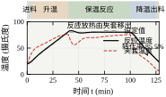
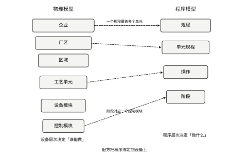
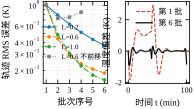
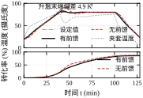
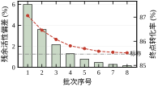
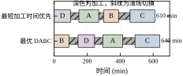
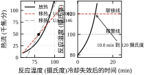
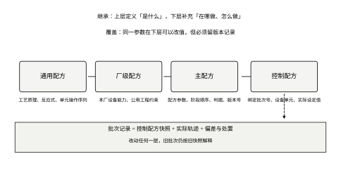
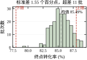

间歇反应釜是精细化工、制药、食品与添加剂行业最常见的生产单元。它的运行方式与前面几十章讲的连续过程完全不同：一釜料从投料开始，升温、保温反应、降温、出料，走完一条有限长的轨迹就结束，然后清洗、投下一釜。整个过程没有稳态，只有轨迹；没有“工作点”，只有“阶段”。
正因为如此，批次车间的控制问题也长得不一样。工程师最常遇到的是三种“不听话”。
第一种：同一张配方，两釜做出来不一样。 配方上写的是“升温到 80 摄氏度，保温 60 分钟”，两釜都照做了，但终点转化率一釜是 0.87，另一釜是 0.82。操作记录上看不出任何异常，温度曲线“都很漂亮”。差异来自原料活性、传热能力、初始温度这些没被记录的因素，而温度轨迹的“漂亮”只是表象——真正决定转化率的是温度对时间的积分，肉眼看不出来。
第二种：换一个产品，整定参数全得重来。 同一台釜做 A 产品时，温度回路 K_c=2.3、T_i=8\ \mathrm{min}，控制得很好；换做 B 产品，装料量少了一半，同样的参数就振。原因是装料量改变了热容，也就改变了对象的增益与时间常数；这些参数本来属于“批次”而不属于“设备”，但多数 DCS 把它们存在回路里，而不是存在配方里。
第三种：审计来问“这一批为什么”，答不上来。 客户或监管方要求提供某一批的完整记录：当时用的是哪一版配方、每个阶段的实际起止时间、温度偏差多少、偏差是谁处置的、处置依据是什么。如果配方只存在工程师的电脑里、阶段切换只靠操作工看表、偏差只写在纸质交接班上，这个问题就答不上来。答不上来的后果不是罚款，而是这一批货可能整批报废。
这三种现象指向同一件事：批次生产需要一套独立于“回路整定”的管理体系，把“做什么”（配方）、“在哪做”（设备）、“这一批做得怎么样”（批记录）分开管。这就是 ISA-88 要解决的问题。它不是控制算法，而是一套让配方可复用、批次可追溯、设备可互换的建模规范。
把批次当成“慢一点的连续”是理解偏差的起点。两者有五个结构性差别，每一个都影响控制方案。
其一，时间是有限的。 连续过程可以假设 t\to\infty，所有指标都用稳态与频率响应定义；批次从投料到出料只有一百多分钟，初值、终值、中间过程同等重要。控制系统不只要“稳”，还要“在有限时间内走到指定的终点”。
其二，没有稳态。 连续过程的性能指标是超调、调节时间、稳态误差；批次的指标是轨迹误差、终点质量、批次周期。用阶跃响应整定出来的参数，在一条持续变化的斜坡上未必合适——斜坡跟踪误差由积分环节决定，与阶跃响应的形状关系不大。
其三，状态由事件驱动。 连续过程的状态是连续变量；批次的状态是“阶段”，阶段之间由判据切换（温度到 80、时间到 60\ \mathrm{min}、转化率到 0.85）。这使批次控制天然是“连续控制 + 离散逻辑”的混合系统，纯连续的那套稳定性理论只覆盖了一半。
其四，可追溯性是硬要求。 连续过程出了不合格品，可以切到下料罐；批次出了不合格品，只能整批处置。所以批次必须记录“怎么做的”，而不只是“做出了什么”。
其五，设备是共享的。 一台釜一天做几个产品，产品之间的清场、切换、验漏占用大量时间。连续装置的产品切换是“过渡料”，批次的产品切换是“停机时间”。这使排程成为批次车间的主要优化对象，而在连续车间里排程几乎不是问题。
把这五条记住，后面所有的设计选择都能找到依据：为什么配方要分层（因为设备共享）、为什么阶段判据要冗余（因为事件驱动）、为什么批次间控制值得做（因为可追溯性提供了数据）。
用本章的模型把“温度偏差的代价”算出来。对象是一台 5\ \mathrm{m^3} 的夹套反应釜，一级放热反应，活化能除以气体常数为 8000\ \mathrm{K}，保温 80 摄氏度。
在 80 摄氏度处，速率常数对温度的相对灵敏度是
\frac{1}{k}\frac{\mathrm{d}k}{\mathrm{d}T}=\frac{E/R}{T^2}=\frac{8000}{353.15^2}=6.41\%\ \mathrm{K^{-1}}
也就是说，温度高 1 摄氏度，反应速率快 6.4\%。保温 60 分钟、转化率在 0.85 附近时，仿真给出的终点转化率对保温温度的偏导是 1.43 个百分点每开尔文。反过来，保温时间延长 1 分钟只增加 0.35 个百分点。
这两个数放在一起，说明了一件在现场经常被忽略的事：温度控制的 1 摄氏度，等价于保温时间的 4 分钟（1.43/0.35\approx4.1）。操作工为了“保险”把保温温度抬高 1 摄氏度，等于偷偷把配方延长了 4 分钟；而如果这一釜的杂质指标对过度反应敏感，这 1 摄氏度就可能把一批合格品做成不合格品。
再往外推一层：原料活性偏高 5\%，终点转化率上升 1.34 个百分点，与升温 1 摄氏度的效果几乎相同。这就是为什么“同一张配方两釜不一样”——配方管住了温度和时间，却管不住原料活性，而原料活性对终点的影响与温度同量级。
本章的核心可以压成一句话：批次控制要管住三样东西——轨迹、配方、记录；三者分别对应“这一釜做得准不准”“下一釜知不知道该怎么做”“上一釜能不能解释清楚”。
路线相应地分三段。
第一段是建模与控制（§109.2 至 §109.8）：把批次写成“动力学 + 能量平衡 + 轨迹”，用前馈把配方规定的升温速率与反应放热直接折成夹套温度，用 PI 只修正残差；再用有限差分算出配方参数对终点的灵敏度，知道哪个参数值得精确、哪个可以放松。
第二段是一致性与优化（§109.6、§109.9）：批次间的差异不可能靠单批控制消除，只能靠“从上一批学”——迭代学习修正整条轨迹，EWMA 修正配方参数。两者都有收敛条件，也都有失效方式。
第三段是管理与落地（§109.10、§109.11）：ISA-88 的四层配方、批次号与版本、电子批记录、阶段状态机、审计要求。这一段看起来不像“控制”，但它决定了前面两段能不能在车间活下来。
为了让所有数字可复现，本章从头到尾用同一台反应釜。参数见表 109-1。
表 109-1 仿真用夹套反应釜参数
| 符号 | 含义 | 数值 | 单位 |
|---|---|---|---|
| V | 装料体积 | 5.0 | \mathrm{m^3} |
| \rho c_p | 体积热容 | 4.0\times10^3 | \mathrm{kJ/(m^3\cdot K)} |
| C | 总热容 | 2.0\times10^4 | \mathrm{kJ/K} |
| C_{A0} | 初始浓度 | 1.0 | \mathrm{kmol/m^3} |
| (-\Delta H) | 反应热 | 4.0\times10^5 | \mathrm{kJ/kmol} |
| E/R | 活化能/气体常数 | 8000 | \mathrm{K} |
| k_{350} | 350\ \mathrm{K} 速率常数 | 0.020 | \mathrm{min^{-1}} |
| UA | 传热能力 | 2000 | \mathrm{kJ/(min\cdot K)} |
| \tau_j | 夹套时间常数 | 3.0 | \mathrm{min} |
| T_j | 夹套温度范围 | 5–95 | 摄氏度 |
配方规定的轨迹是：20 摄氏度起，40\ \mathrm{min} 线性升到 80 摄氏度，保温 60\ \mathrm{min}，再 25\ \mathrm{min} 降到 30 摄氏度出料。标称批次跑完，终点转化率 0.8547，保温段最高温度 82.93 摄氏度（设定 80），夹套温度在保温段维持在 56.2 到 75.6 摄氏度之间。
注意最后这个数：保温段的夹套温度比反应温度低 5 到 24 摄氏度。这是放热反应的特征——夹套在移热，不在加热。很多现场事故就出在这一点被误解：操作工看到“温度上不去”就去开大蒸汽，而实际上温度上不去是因为反应还没起来，开蒸汽只会把未反应的物料加热到引发温度，然后一次性放热。
本章只讲批次特有的部分，通用内容一律指回，不重复推导。
回路整定与 PID 结构见第 44 章与第 106 章；本章只用 IMC-PI 的结论，不重推参数公式。多变量耦合与解耦见第 108 章；批次釜通常只有一个温度回路，偶尔带压力回路，耦合问题比连续装置轻，需要时按第 108 章的流程处理。模型预测控制见第 58 章与第 80 章；批次 MPC 是“有限时域轨迹跟踪”，与连续 MPC 的差别只在终端约束与参考轨迹，算法本身不重复。纯延迟补偿见第 47 章与第 107 章；夹套滞后只有 3\ \mathrm{min}，本章用前馈而不是 Smith 预估器，原因在 §109.4 说明。软测量与在线分析见第 110 章；本章假定转化率由实验室化验或在线色谱给出，不展开估计方法。
唯一需要提前说明的边界是：本章的“稳定性”有三种含义（热稳定、轨迹稳定、批次间收敛），与连续系统的 Lyapunov 稳定性不是同一个概念。§109.6 会逐一给出判据，读者不要把它们与第 38 章、第 41 章的判据混用。
批次控制的精度不是“越准越好”，而是有一个明确的经济换算点。用本章的数字算一遍。
200 批里有 11 批超出 [0.78,0.88] 的规格，占 5.5\%。超差的处置通常是返工、降级或报废，按“每批产值记作 1 个单位”折算，损失约 5.5 个单位。若把 C_{pk} 从 0.54 提到 1.0（对应超差率从 5.5\% 降到千分之几），损失能压到 0.3 个单位左右，收益约 5 个百分点。
代价端：表 109-8 已经说明，这 5 个百分点里有 4 个多在原料活性上，靠控制系统拿不到。控制系统能拿到的只有“不放大”这一份，而这一份在 C_{pk}=0.54 里已经基本拿到了。所以“再调调 PID 把 C_{pk} 提上去”这笔账是算不过来的，真正的投入方向是原料规格与批次间校正。
反过来，另一些花在控制上的钱是划算的。前馈把全程 RMS 从 3.297\ \mathrm{K} 压到 1.094\ \mathrm{K}，成本只是几十行代码与一次 UA 辨识；它换来的是升温时间可预测、峰值可控、终点可算——这些直接决定“这一釜能不能按计划出料”。轨迹精度的价值不在终点转化率上（那一项被原料主导），而在“可预测”上：可预测才能排程，才能承诺交期。
这就是本章要反复回到的一个判断：批次控制的第一价值是“让每一批都能按时、按轨迹走完”，第二价值才是“让每一批都一样”。前者靠前馈与阶段逻辑，后者靠原料与批次间校正，两者的投入方向完全不同。
一台夹套反应釜，一级放热反应，忽略副反应与体积变化，只需要三个方程。
物料衡算写成转化率的形式：
\frac{\mathrm{d}X}{\mathrm{d}t}=k(T)\,(1-X),\qquad X(0)=0 \tag{109-1}
能量衡算：
C\frac{\mathrm{d}T}{\mathrm{d}t}=(-\Delta H)\,k(T)\,C_{A0}\,(1-X)\,V-UA\,(T-T_j) \tag{109-2}
夹套一阶随动：
\tau_j\frac{\mathrm{d}T_j}{\mathrm{d}t}=T_{j,\mathrm{sp}}-T_j \tag{109-3}
速率常数的温度依赖用 Arrhenius 形式，写成相对参考温度更便于现场换算：
k(T)=k_{\mathrm{ref}}\exp\left[-\frac{E}{R}\left(\frac{1}{T}-\frac{1}{T_{\mathrm{ref}}}\right)\right] \tag{109-4}
这三个方程的耦合方向是单向的：T 决定 X 的演化，X 反过来通过放热项影响 T。这个回路就是“反应放热—温度上升—反应加快—放热更多”的正反馈，也是所有飞温事故的根源。§109.6 会用临界移热能力把这个正反馈量化。
式 (109-2) 里没有搅拌项、没有壁厚、没有热损失。这不是偷懒，而是因为它们的时间常数（秒级）比配方的时间尺度（分钟级）小两个数量级，折算成等效延迟加进 \tau_j 更省事，也更接近现场辨识出来的模型。批次模型的精度目标是“能算出终点”，不是“能复现每一秒”。
把式 (109-1) 积分，得到
X(t)=1-\exp\left[-\int_0^t k\big(T(\tau)\big)\,\mathrm{d}\tau\right] \tag{109-5}
这个式子说明：终点转化率只取决于 k(T) 的时间积分，不取决于温度曲线长什么样。两条温度曲线，只要 \int k\,\mathrm{d}t 相同，终点就相同。一条在 80 摄氏度保温 60 分钟的曲线，与一条先在 85 摄氏度保温 30 分钟、再在 77 摄氏度保温 30 分钟的曲线，终点可能完全一样，但杂质谱可能完全不同——因为副反应的活化能不同。
这就是为什么“温度曲线漂亮”不能作为批次合格的依据：积分相同只保证主反应转化率相同，不保证选择性相同。要判断选择性，必须知道温度的历史，而不只是终点的积分值。
等效保温时间。 式 (109-5) 还能换一个更有现场感的写法。把积分除以参考温度下的速率常数，得到
t_{\mathrm{eq}}=\int_0^t\frac{k\big(T(\tau)\big)}{k(T_{\mathrm{ref}})}\,\mathrm{d}\tau
它的含义是：整条温度曲线被折算成“在参考温度下保温了多少分钟”。本釜的终点转化率 0.8547 对应 -\ln(1-0.8547)=1.929，除以 k(80)=0.0245\ \mathrm{min^{-1}}，得 t_{\mathrm{eq}}=78.9\ \mathrm{min}。
这个数值得当场解释清楚：配方写的是“保温 60\ \mathrm{min}”，但等效保温时间是 78.9\ \mathrm{min}，多出来的 18.9\ \mathrm{min} 来自升温段的后半程与降温段的前半程——这两段温度虽然低于 80，但时间加起来有六十几分钟，k 值又不算太小，贡献不可忽略。操作工报“保温一小时”，工艺员算“等效七十九分钟”，两个人说的是两件事。现场争论“到底保温了多久”时，先统一到等效时间上，争论就结束了。
等效时间还有一个直接用途：它就是灭菌工程里的 F_0 值的同构量。既然整条曲线可以折成一个数，那么“温度低了 1 摄氏度”与“时间少了 4 分钟”就可以在同一个标尺上换算，配方补偿、批次间校正、放行判定都可以用这一个数说话。
它也有明确的边界：等效时间只对“单一反应、单一活化能”成立。若同时关心主反应与杂质生成，两者的活化能不同，折算成同一个等效时间就会抹掉选择性信息——这正是下面要讲的“温度历史不能只看积分”。
把式 (109-5) 对保温温度求偏导，得到相对灵敏度的两种等价写法。
第一种是速率常数的灵敏度：
S_k=\frac{1}{k}\frac{\mathrm{d}k}{\mathrm{d}T}=\frac{E/R}{T^2} \tag{109-6}
在 80 摄氏度处，S_k=6.41\%/\mathrm{K}。
第二种是终点转化率的灵敏度。当反应接近一级、保温时间 \tau_h 固定时，
\frac{\partial X}{\partial T}\approx \tau_h\,(1-X)\,k(T)\,S_k \tag{109-7}
把标称值代进去：\tau_h=60\ \mathrm{min}、1-X=0.145、k=0.0245\ \mathrm{min^{-1}}、S_k=0.0641\ \mathrm{K^{-1}}，得到 60\times0.145\times0.0245\times0.0641=0.0137，即 1.37 个百分点每开尔文。仿真给出的有限差分值是 1.43，差 4\%，原因是反应并非严格一级、保温段温度也不是严格恒定。这个 4\% 的偏差本身就是个提醒：解析式用来判断量级，精确值必须靠仿真或现场数据。
同样地，对保温时间求偏导：
\frac{\partial X}{\partial \tau_h}=(1-X)\,k(T) \tag{109-8}
代入得 0.145\times0.0245=0.00355，即 0.36 个百分点每分钟，与仿真的 0.35 吻合。两个偏导之比
\frac{\partial X/\partial T}{\partial X/\partial \tau_h}=\frac{\tau_h}{S_k^{-1}}=\tau_h S_k \tag{109-9}
在标称点是 60\times0.0641=3.85 分钟每开尔文。也就是说，保温温度抬 1 摄氏度，等于把保温时间延长 3.85 分钟。这个换算不需要跑仿真，用配方参数就能在会议桌上算出来，是本章最实用的一个式子。
如果冷却突然失效，所有反应热都用来加热物料，温升的上限叫绝热温升：
\Delta T_{\mathrm{ad}}=\frac{C_{A0}\,(-\Delta H)}{\rho c_p} \tag{109-10}
代入参数：1.0\times4.0\times10^5/4.0\times10^3=100\ \mathrm{K}。也就是说，从 80 摄氏度出发，最坏情况能到 180 摄氏度。这个数决定了安全阀、泄放罐与联锁阈值的设计基准，比任何“经验上不会超”的判断都可靠。
绝热温升只回答“最坏到多少”，不回答“多快到”。要判断快慢，看热生成与移热两条曲线的关系。热生成对温度的斜率是
\frac{\mathrm{d}Q_{\mathrm{gen}}}{\mathrm{d}T}=Q_{\mathrm{gen}}\,\frac{E/R}{T^2} \tag{109-11}
移热对温度的斜率就是 UA。当
UA<Q_{\mathrm{gen}}\,\frac{E/R}{T^2}\equiv UA_{\mathrm{crit}} \tag{109-12}
时，温度稍一升高，放热的增加快于移热的增加，工作点是不稳定的——这就是参数敏感性意义上的飞温条件。标称点算出来 UA_{\mathrm{crit}}=3146\ \mathrm{kJ/(min\cdot K)}，而实际 UA=2000，只有临界值的 64\%。
这个结果是本章最不舒服、也最需要说清楚的一条：本章用的反应釜在保温段开环就是不稳定的，正常运行完全依赖温度回路与联锁。 这不是模型选得极端，而是放热反应的常态——很多精细化工反应釜的移热能力都低于临界值，靠控制“压住”。理解这一点，才能理解为什么 §109.10 要把“冷却失效”当成独立的安全场景来做联锁，而不是当成控制回路的一个扰动。
批次没有稳态误差，只有轨迹误差。常用的三个口径：
e(t)=r(t)-y(t),\qquad \mathrm{RMS}=\sqrt{\frac{1}{N}\sum_{i=1}^{N}e_i^2},\qquad \mathrm{IAE}=\int_0^{t_f}|e(t)|\,\mathrm{d}t \tag{109-13}
三者回答不同的问题。RMS 反映“整体偏了多少”，对持续时间敏感；IAE 反映“累计偏了多少”，对大幅短时偏差更敏感；最大值反映“最坏那一刻”，用于判断是否触发联锁。
本章主要用 RMS，并且分段计算：升温段、保温段、降温段各自一个 RMS。原因很实际——升温段的误差由前馈与斜坡速率决定，保温段的误差由回路带宽与放热扰动决定，两段的物理机制不同，合成一个总数会掩盖问题。仿真里无前馈时全程 RMS 是 3.297\ \mathrm{K}，但有前馈时是 1.094\ \mathrm{K}；分开看，升温段从 2.742 降到 1.141，保温段从 3.810 降到 0.908，改善幅度一目了然。
还有一个容易被忽略的口径：终点误差与轨迹误差不是一回事。一条轨迹全程偏差 2\ \mathrm{K}，只要偏差在保温段前后对称、积分抵消，终点转化率可能完全正常；反过来，轨迹 RMS 只有 0.5\ \mathrm{K}，但偏差集中在保温末段的 10 分钟，终点就可能偏。所以批次控制要同时看两个指标，不能只报一个“控制精度”。
ISA-88 把批次系统拆成两套并行的层次：物理模型回答“在哪做”，程序模型回答“做什么”。两套层次一一对应，对应关系就是配方的落地点。
表 109-2 ISA-88 的物理模型与程序模型
| 层次 | 物理模型 | 程序模型 | 本章对应 |
|---|---|---|---|
| 1 | 企业 | — | 企业资源计划 |
| 2 | 厂区 | — | 制造执行系统 |
| 3 | 区域 | — | 一个车间 |
| 4 | 工艺单元 | 规程 | 一条产线 |
| 5 | 设备单元 | 单元规程 | 一台反应釜 |
| 6 | 设备模块 | 操作 | 夹套、搅拌 |
| 7 | 控制模块 | 阶段 | 温度回路、阀门 |
规程是“一批产品的完整做法”，单元规程是“在一台设备上做的那一段”，操作是“设备模块上的一段动作”，阶段是“最小的控制动作单元”。四层程序模型与四层设备层次对齐之后，配方就可以“换设备不换程序”：同一张主配方拿到另一台釜上，只要那台釜的单元规程实现了同样的阶段接口，配方不用改。
这个设计的价值在于解耦。工艺工程师只关心规程与阶段参数，不需要知道阀门怎么开；仪表工程师只关心阶段的标准接口（启动、保持、暂停、恢复、终止、异常），不需要知道这一批做什么产品。两者通过“阶段”这个契约连接。现场实施 ISA-88 失败的项目，多半是把契约做成了“每个产品一套阶段”，结果阶段数量爆炸，谁也维护不了。
配方参数不是一个标量，而是一个向量：保温温度、保温时间、升降温速率、投料配比、搅拌转速、pH 控制点。它们对终点质量的作用可以写成灵敏度矩阵
\Delta \mathbf{q}\approx \mathbf{S}\,\Delta \boldsymbol{\theta},\qquad S_{ij}=\frac{\partial q_i}{\partial \theta_j} \tag{109-14}
本章只取一个质量指标（终点转化率）与六个参数，用有限差分算出 \mathbf{S} 的一行，列在表 109-3。
表 109-3 配方参数对终点转化率的灵敏度（标称 X=0.8547）
| 参数 | 变化量 | 终点转化率变化 | 相对权重 |
|---|---|---|---|
| 保温温度 | +1\ \mathrm{K} | +1.43 个百分点 | 1.00 |
| 保温时间 | +1\ \mathrm{min} | +0.35 个百分点 | 0.24 |
| 原料活性 | +5\% | +1.34 个百分点 | 0.94 |
| 初始温度 | +1\ \mathrm{K} | -0.01 个百分点 | 0.01 |
| 传热能力 | +10\% | -0.01 个百分点 | 0.01 |
| 夹套滞后 | +10\% | +0.07 个百分点 | 0.05 |
这张表读起来有三条结论。
第一，保温温度是唯一的“高杠杆”参数，权重 1.00；保温时间只有它的四分之一。现场把温度控制精度从 \pm2\ \mathrm{K} 提到 \pm0.5\ \mathrm{K}，收益相当于把保温时间控制精度从 \pm8\ \mathrm{min} 提到 \pm2\ \mathrm{min}。前者的投入是换一支更好的温度计与整定回路，后者要换流量计与阀门，前者便宜得多。
第二，原料活性的权重与温度同量级，但配方管不住它。这就是批次间控制存在的理由：既然管不住，就只能“测出来再补”。
第三，初始温度与传热能力的权重接近零。这不是说它们不重要，而是说在“升温 40\ \mathrm{min}、全程闭环”的条件下，它们的影响被回路吸收了——初始温度高 1 摄氏度，升温段少走 40 秒，保温段照样到 80 摄氏度，终点几乎不变。反过来，如果升温段是开环加热（不控温），初始温度的影响会立刻放大十几倍。灵敏度矩阵依赖控制策略，不是对象的固有属性，这点在读任何灵敏度表时都要记住。
批次间一致性用过程能力指数描述。设终点质量 q 的规格下限与上限为 LSL、USL，样本均值 \bar q、标准差 s，则
C_p=\frac{USL-LSL}{6s},\qquad C_{pk}=\min\left(\frac{USL-\bar q}{3s},\frac{\bar q-LSL}{3s}\right) \tag{109-15}
C_p 只看分散度，C_{pk} 同时看分散度与中心偏移。两者之差就是“均值没对准”的代价。
仿真给出 200 批的终点转化率均值 0.8549、标准差 0.0155，取规格 [0.78,0.88]，则 C_p=1.08、C_{pk}=0.54，200 批里有 11 批超差。C_p 过 1、C_{pk} 只有 0.54，说明分散度勉强够、中心偏了：均值 0.8549 距上限只有 0.025，距下限有 0.075，中心应当下移到 0.83。
这正是 §109.9 的 EWMA 校正要解决的问题：把中心拉回规格中点，C_{pk} 可以从 0.54 提到 1.0 以上，而标准差一点没变。很多“批次一致性差”的抱怨，其实是“批次均值偏了”，不是“批次波动大”，两者的处置完全不同。
批次间控制把“批”当成迭代的一次。设第 k 批的轨迹误差为 \mathbf{e}_k，修正量为 \mathbf{u}_k，线性化后有
\mathbf{e}_{k+1}=(\mathbf{I}-\mathbf{L}\,\mathbf{G})\,\mathbf{e}_k \tag{109-16}
收敛的充要条件是谱半径 \rho(\mathbf{I}-\mathbf{L}\mathbf{G})<1。对单变量、对象直流增益归一化为 1 的情形，条件退化成 |1-L|<1，即 0<L<2。
但这是“逐点”的条件，实际对象有延迟，第 t 时刻的修正影响的是 t+\theta 时刻的输出。若直接用同一时刻的误差做修正，等效于在迭代算子中引入一个纯延迟环节 e^{-j\omega\theta}，在某个频率上相位转满 180^\circ，谱半径就超过 1。仿真验证了这一点：L=0.6、不前移时，四批的残余误差是 1.008\to0.727\to0.749\to0.847，先降后升；把误差前移 6 拍（3\ \mathrm{min}，正好是夹套时间常数）之后，六批降到 0.188\ \mathrm{K}。
所以迭代学习的第一条工程规则是：修正量必须对准它将要影响的时刻，而不是它被观测到的时刻。 前移多少拍由对象的纯延迟加半个主滞后决定，靠阶跃响应估，不靠试。
单台设备、n 个批次的排程是一个旅行商问题的变体。设批次 i 的加工时间为 p_i，从 i 切换到 j 的清场时间为 s_{ij}，排序为 \pi，则完工时间
C_{\max}(\pi)=p_{\pi_1}+\sum_{k=2}^{n}\left(s_{\pi_{k-1}\pi_k}+p_{\pi_k}\right) \tag{109-17}
目标是最小化 C_{\max}。n=4 时全枚举 24 种排序就能拿到最优；n=10 时是 3.6\times10^6 种，还能穷举；n=20 时就只能靠启发式或混合整数规划了。
本章的算例：四个产品加工时间 120/90/150/100\ \mathrm{min}，切换时间 30 到 90\ \mathrm{min} 不等（同系产品短、跨系产品长）。全枚举最优是 DABC，610\ \mathrm{min}；最短加工时间优先给出 BDAC，640\ \mathrm{min}，劣化 4.9\%。全部 24 种排序的完工时间在 610 到 680\ \mathrm{min} 之间，中位数 650。
这个结果有两层含义。第一，启发式规则离最优只有 5\%，不值得为它上复杂的优化器；第二，切换时间占总周期的 24.6\%，是最大的单项浪费，把清场时间从 60\ \mathrm{min} 压到 30\ \mathrm{min} 的收益，比把排序从次优调到最优大一个数量级。排程优化的第一杠杆永远是缩短切换，不是换算法。
本章的模型建立在五条假设上，每条都有明确的失效条件。
第一，单相、恒体积、无副反应。失效条件：有结晶、有气相生成、有显著副反应。此时转化率不足以描述质量，必须引入选择性方程或组分模型。
第二，一级动力学。失效条件：反应级数不为 1，或存在自催化。自催化最危险，因为放热曲线不是单调的，临界移热判据要重新推。
第三，夹套温度均匀、传热系数恒定。失效条件：釜壁结垢、夹套短路、物料黏度随转化率显著上升。UA 下降 30\% 足以让临界裕度从 0.64 掉到 0.45。
第四，温度是唯一的质量相关变量。失效条件：pH、搅拌、加料速率对质量的影响与温度同量级。此时配方参数向量要扩维，灵敏度矩阵也要扩维。
第五，批次之间相互独立。失效条件：共用公用工程、共用尾气系统、前后批次的清洗不彻底。此时“批次间一致性”里混进了“批次间干扰”，用 EWMA 会把干扰当成漂移去修正，越修越偏。
ISA-88 里有一组常被忽略的概念，恰好对应工程上最棘手的问题：同一个产品，能不能在两台釜上做？
设备能力（equipment capability）是设备单元“能做什么”的声明，通常写成“能在 5 到 95 摄氏度之间控温”“能承受 0.6\ \mathrm{MPa}”“配有回流冷凝器”。它是设备属性，与产品无关。
单元分配（unit allocation）是批次启动前把“规程要求的单元能力”与“车间里可用的设备单元”做匹配。匹配结果可能是唯一的一台，也可能是三台里挑一台。
路由（routing）是当有多台可用时，按什么规则挑：最短排队、最低成本、最小切换、指定设备。路由规则属于厂级配方，不属于主配方。
这三个概念为什么重要？因为同一张主配方在不同设备上执行，结果可能不同。本章的 UA=2000、\tau_j=3\ \mathrm{min} 是 A 釜的参数；B 釜若夹套面积小、搅拌弱，同样的前馈量算出来就不对。ISA-88 的处理方式是：主配方只写“升温到 80 摄氏度、保温 60 分钟”，控制配方按设备实例生成，各自带自己的 UA 与 \tau_j。
工程上最容易犯的错是把“路由”写成“随便挑一台空闲的”。一旦设备能力有差异，同样的配方在 B 釜上做出的批次就系统性偏移，而这种偏移会被一致性统计误判成“过程漂移”。判断办法很简单：把批次数据按设备号分组，若组间均值差异显著、组内很稳，问题在设备差异，不在过程漂移。这也是 §109.10.5 里强调“批次记录必须绑定设备号”的原因。
灵敏度矩阵 \Delta\mathbf q\approx\mathbf S\Delta\boldsymbol\theta 通常被用来“由参数误差算质量误差”，反过来用更有价值：给定质量容差，反推每个参数允许多大误差。
设终点转化率的允许偏差是 \pm0.5 个百分点。若只让一个参数承担全部容差，各自的允许量是
\Delta T=\frac{0.5}{1.43}=0.35\ \mathrm{K},\qquad \Delta t=\frac{0.5}{0.35}=1.4\ \mathrm{min},\qquad \Delta b=\frac{0.5}{0.266}=1.9\%
若三个误差同时存在、按平方和分配（各承担 0.29 个百分点），允许量收紧到 0.20\ \mathrm{K}、0.83\ \mathrm{min}、1.1\%。
这张容差表立刻暴露一个倒挂：温度回路在保温段稳下来之后能把偏差压到零点几开尔文（保温段 RMS 是 0.91\ \mathrm{K}，其中大头是进入保温时的 2.9\ \mathrm{K} 过冲），而原料活性常常波动 \pm5\%，比允许量大四五倍。也就是说，控制做得再精，一致性也被原料卡住——这与 §109.6.6 的误差预算结论完全一致，只是从另一个方向推出来的。
容差表还有一个用途：决定“哪些参数值得花钱”。把某个参数的允许量与实际波动比一下，比值最小（最超标）的那个就是第一优先。本章的顺序是原料活性、保温温度、保温时间。先买在线分析仪或加严进厂检验，比升级控制系统划算得多。
三个方程能用，靠的是四条隐含条件；每破一条，结论都会以可预测的方式偏，而不是随机地不准。
条件一：单一反应、无副反应。 若有平行副反应，\Delta H 只是表观值，而且随温度变化——高温段副反应占比上升，表观放热变小，前馈就会高估，夹套压得过深。现场的典型表现是“升温段正常、保温前二十分钟温度偏低、后段又追上来”，看起来像 PI 调得不对，实际是放热模型错了。
条件二：对浓度是一阶。 若反应对浓度是二级，k(1-X) 要换成 k(1-X)^2，同样保温时间下终点偏低，且用一阶模型拟合出的 k_{\mathrm{ref}} 会随初始浓度变化。这就是“换一批原料就要重拟合”的常见根因，不是原料本身变了，而是模型阶数不对，浓度一变，拟合结果就跟着变。
条件三：体积与物性不变。 加料、取样、蒸发都会改 V 与 C。取样 50\ \mathrm{mL} 对 5\ \mathrm{m^3} 可以忽略；但保温段若有回流或明显蒸发，C 会变，\tau_T=C/UA 也跟着变，整定时的 10\ \mathrm{min} 就不再成立。
条件四：夹套温度均匀。 大釜的夹套进出口温差可达十几开，用出口温度当“夹套温度”会系统性高估移热能力，前馈给的冷量不够。做法是用进出口平均温度，或按流量加权。这一条在小试装置上永远暴露不出来，放大到 5\ \mathrm{m^3} 以上才开始显形。
四条里最容易被忽略的是第二条，因为它不影响标称批次的拟合精度，只在浓度变化时出错。判据很简单：同一配方在两个不同初始浓度下各做一批，若终点与模型预测对不上，就说明阶数不对。投产后补做这一步，比在模型里堆参数有效得多。
批次控制的设计可以按六步走，顺序不能乱，因为后一步的输入来自前一步的输出。
第一步，定义批次与阶段边界：确定一批从哪开始、到哪结束，中间分几个阶段，每个阶段的进入与退出判据是什么。
第二步，建立单元模型：测（或算）出 UA、C、k_{\mathrm{ref}}、E/R、\tau_j 这几个参数，形成 §109.1.5 那样的参数表。
第三步，配方分层：把参数按“通用、厂级、主配方、控制配方”四层分开，决定哪些进配方、哪些留在设备上。
第四步，确定控制策略：升温段用前馈 + PI，保温段用 PI（前馈退化为放热补偿），降温段用最大冷却 + 终点保护；阶段切换用冗余判据。
第五步，组态批次管理：批次号、状态机、阶段接口、批记录字段、异常处置。
第六步，验证与放行：连续跑三批验证一致性，跑一批故障注入验证联锁，出验证报告。
这六步里，第三步最容易被跳过，第五步最容易做错。跳过第三步的后果是“换个产品就重调参数”，做错第五步的后果是“审计时说不清这一批怎么做的”。两者都不影响单批跑通，所以往往到量产或审计时才暴露。
阶段划分的原则是“一个阶段只做一件事，且有一个明确的完成判据”。本章的批次的阶段划分如图 109-1。

五个阶段的判据分别是：
| 阶段 | 进入条件 | 退出条件 | 判据类型 |
|---|---|---|---|
| 进料 | 批次启动、设备就绪 | 累计进料量到配方值 | 累计量 |
| 升温 | 进料完成、搅拌运行 | 温度到 80 摄氏度并保持 2\ \mathrm{min} | 温度 + 时间 |
| 保温反应 | 升温完成 | 保温时间到 60\ \mathrm{min} 或转化率到 0.85 | 时间或质量 |
| 降温 | 保温完成 | 温度到 30 摄氏度 | 温度 |
| 出料 | 降温完成、下游就绪 | 釜内液位到低限 | 液位 |
三个细节值得展开。
升温段的退出判据要加“保持 2\ \mathrm{min}”。 只用“温度到 80”会在温度穿越设定值时立即切换，此时温度还在上升，切到保温段后 PI 会把阀关死，温度冲过 80 再回落，形成一个可见的超调。加 2\ \mathrm{min} 保持，等于要求温度“稳定在带内”，超调从 2.9\ \mathrm{K} 降到 1\ \mathrm{K} 以内。这个 2\ \mathrm{min} 不是拍脑袋，取的是夹套时间常数的三分之二。
保温段的退出判据要“时间或质量，取先到”。 纯时间判据简单，但遇到原料活性低时会欠反应；纯质量判据准确，但化验有延迟（离线化验要 20 到 40\ \mathrm{min}），等结果出来已经晚了。工程上的做法是双判据：时间到 60\ \mathrm{min} 时取样，若转化率低于 0.82 则延长 10\ \mathrm{min} 并再取样，最多延长两次；若期间转化率提前到 0.85 也可提前结束。这条规则把“配方固定”变成了“配方带判定”，是批次控制与连续控制最大的操作差异。
降温段的终点要留 5 摄氏度的余量。 配方写出料温度 30 摄氏度，实际切到出料阶段设在 35 摄氏度，因为出料过程中釜内温度还会被夹套余冷继续拉低。若按 30 切换，出料结束时可能到 27，对下游结晶工序反而是另一种偏差。这个“提前切换”的量必须写进配方，不能靠操作工临场判断。
批次模型有五个参数，来源各不同。
C（总热容）由装料量与物料比热算，装料量改变时按比例缩放。UA 靠一次“降温测试”测：稳定在 80 摄氏度，夹套切到 5 摄氏度，记录温度下降曲线，用 \tau=C/UA 拟合。本章的 UA=2000 对应 \tau=10\ \mathrm{min}，即 80 摄氏度降到 43 摄氏度用时 10\ \mathrm{min} 左右。k_{\mathrm{ref}} 与 E/R 靠两到三个不同温度下的保温实验拟合，至少两个温度点，否则 E/R 无法辨识。\tau_j 靠夹套阶跃测试，通常 2 到 5\ \mathrm{min}。
五个参数里，E/R 最容易被忽略，也最关键。 它决定温度灵敏度（6.41\%/\mathrm{K}）与临界移热能力，直接关系到安全。很多厂的安全评估用“绝热温升”一个数，虽然保守，但无法回答“多快”。用本章的算例：绝热温升 100\ \mathrm{K} 看着还好，但从 80 摄氏度起 6.9\ \mathrm{min} 就到 100 摄氏度、10.0\ \mathrm{min} 就到 120 摄氏度——留给操作员的时间只有几分钟。没有 E/R，就做不出这个时间预算；没有时间预算，联锁阈值就只能拍脑袋。
配方的四层结构如图 109-2 与图 109-3。这里先说分层的判据，图放到 §109.10 与版本控制一起讲。

判断一个参数该放哪一层，问三个问题。
这个参数是否与设备无关？ 与设备无关的（反应温度、保温时间、配比）放主配方；与设备有关的（搅拌转速上限、夹套允许温度、阀门开度限幅）放厂级或设备层。
这个参数是否与产品无关？ 与产品无关的（清场程序、验漏标准、取样方法）放通用配方或厂级；与产品有关的放主配方。
这个参数是否需要按批调整？ 需要按批调整的（实际投料量、批次号、分析结果触发的延长量）放控制配方；不需要的留在主配方。
三层判据用下来，参数自然归位。剩下的边界情况只有一类：同一参数既与设备有关又与产品有关，比如“保温温度”。解法是把它放主配方，但在厂级配方里加一条“允许范围”，超出范围时启动变更审批。这样既保留了配方的一致性，又守住了设备能力边界。
本章用的控制结构只有三层，比连续装置简单得多。
第一层是前馈，把“升温所需显热”与“反应放热”直接折成夹套温度。由准稳态能量平衡
C\frac{\mathrm{d}T_{\mathrm{sp}}}{\mathrm{d}t}=UA\,(T_j-T_{\mathrm{sp}})+Q_{\mathrm{gen}} \tag{109-18}
解出前馈的夹套温度
T_{j,\mathrm{ff}}=T_{\mathrm{sp}}+\frac{C\,\dot r-Q_{\mathrm{gen}}}{UA} \tag{109-19}
其中 \dot r=\mathrm{d}T_{\mathrm{sp}}/\mathrm{d}t 是配方规定的升温速率。升温段 \dot r=1.5\ \mathrm{K/min}，C\dot r=3.0\times10^4\ \mathrm{kJ/min}，除以 UA 得 15\ \mathrm{K}，即夹套要比反应温度高 15 摄氏度；保温段 \dot r=0，前馈项变成 -Q_{\mathrm{gen}}/UA，仿真给出这一项从保温起点的 -24.3\ \mathrm{K} 一路回到 -4.4\ \mathrm{K}——放热越强，夹套压得越低。同一个式子在升温段给正值、在保温段给负值，符号自动翻转，这正是它比“分段整定”优越的地方。
第二层是 PI，只修正前馈的残差。误差
e(t)=T_{\mathrm{sp}}(t)-T(t) \tag{109-20}
经 PI 得到修正量 v，夹套设定值为 T_{j,\mathrm{sp}}=T_{j,\mathrm{ff}}+v，再经限幅（5 到 95 摄氏度）与一阶随动进入夹套。
第三层是阶段逻辑，负责切换与联锁。这一层不参与连续控制，只在判据满足时改变前馈的斜率、PI 的设定值或阀的输出。
三层之间的关系是“前馈粗调、PI 细调、逻辑保护”。仿真里前馈把全程 RMS 从 3.297\ \mathrm{K} 压到 1.094\ \mathrm{K}，把升温末端偏差从 4.89\ \mathrm{K} 压到 1.26\ \mathrm{K}；PI 再把保温段的残差压到 0.908\ \mathrm{K}。前馈解决“跟不上”，PI 解决“对不准”，两者缺一不可。
批次管理的最小实现是一个状态机。状态与转移见表 109-4。
表 109-4 批次状态机的六个状态
| 状态 | 含义 | 允许的转移 | 超时处置 |
|---|---|---|---|
| 空闲 | 设备可用、未分配批次 | 就绪 | — |
| 就绪 | 已分配批次号与配方 | 运行、取消 | 30\ \mathrm{min} 未启动则释放 |
| 运行 | 正在执行阶段序列 | 暂停、异常、完成 | 按阶段超时 |
| 暂停 | 保持当前阶段输出 | 运行、异常、终止 | 60\ \mathrm{min} 未恢复则异常 |
| 异常 | 触发联锁或判据失败 | 恢复、终止 | 等待人工确认 |
| 完成 | 阶段序列走完、记录已归档 | 空闲 | — |
三个设计要点。
状态必须互斥且可观测。 组态时把六个状态做成一个整数变量，任何时刻只有一个值；画面上显示状态名与进入时间。现场常见错误是用多个布尔量表示状态（“运行中”“已暂停”“已结束”），组合出非法状态，比如同时“运行中”和“已结束”。
暂停不是停止。 暂停时保持当前阶段的输出（阀位、搅拌、温度设定），不切断；恢复时从暂停点继续，不重新开始阶段。若暂停超过 60\ \mathrm{min}，物料可能已经反应过头或沉淀，必须转异常而不是简单恢复。
异常必须有明确的出口。 异常状态不能靠“复位”按钮直接回运行，必须先回到一个安全状态（通常是把温度拉到安全值、停止加料），再由人工确认后重新进入就绪。“一键复位”是批次系统里最危险的功能，因为它允许人在没搞清楚原因的情况下把系统带回运行。
验证分三类，缺一不可。
一致性验证：连续跑三批同一配方，终点转化率的极差应当小于规格宽度的三分之一。本章的仿真给出 200 批标准差 0.0155，三批的极差期望约 0.03，正好是 [0.78,0.88] 宽度的 30\%。若三批极差超过 0.05，说明有未被控制的显著扰动，先查原料与公用工程，不要急着调参数。
故障注入验证：至少注入四种故障——冷却水断、搅拌停、温度计坏（信号冻结）、阶段判据不满足（超时）。每种故障都要验证：联锁是否动作、动作时间是否在预算内、批记录是否记下了这次故障。故障注入不是“试试看”，而是要有预期结果与实测结果的对照表。
追溯验证：随机抽一批，让不参与该项目的人只看批记录，回答五个问题：用的哪版配方、每个阶段实际起止时间、最大温度偏差、偏差处置、放行依据。五个问题都能答上，追溯链才算通。
设计文档不需要厚，但六项不能少：阶段划分与判据表、模型参数表（含测试日期）、配方四层清单（哪个参数放哪层）、控制结构图（前馈 + PI + 逻辑）、状态机与异常处置表、验证记录（三类验证的实测结果）。
每项都要写“谁在什么时候依据什么定的”。这不是形式主义：批次系统的评审，评审的往往不是技术方案，而是“这个参数凭什么取这个值”。答不上来，方案就过不了。
把 §109.3.2 的划分落成表，每行是一个阶段，每列是一个必须回答的问题。以本章的反应釜为例。
检查：进入判据是“上一批已放行且清洗完成”，动作是验漏、确认公用工程、确认仪表在线，退出判据是“三项检查全部通过”，异常处置是“任一不通过则转异常并挂起”，记录字段是检查人、时间、结果。这个阶段不控温，但它决定了后面所有阶段能不能开始。
装料：进入判据是检查通过，动作是按配方加物料并计量，退出判据是“累计量与配方值偏差小于 0.5\%”，异常处置是“偏差超限则停止加料、转异常”，记录字段是各物料批号、实际加入量。物料批号在这一步绑定，是整条追溯链的起点。
升温：进入判据是装料完成且搅拌已运行 2\ \mathrm{min}，动作是前馈 + PI 跟踪升温曲线，退出判据是“温度 \ge78 摄氏度且持续 30\ \mathrm{s}”，异常处置是“超时 60\ \mathrm{min} 未到则转异常”，记录字段是升温时长、最大偏差、前馈峰值。
保温：进入判据是升温退出，动作是跟踪恒定设定值，退出判据是“等效保温时间 \ge78.9\ \mathrm{min}”（而不是单纯的时钟 60\ \mathrm{min}，见 §109.2.2），异常处置是“温度低于下限累计超过 3\ \mathrm{min} 则延长保温”，记录字段是温度均值、标准差、峰值、实际等效时间。
降温：进入判据是保温退出，动作是按降温曲线走，退出判据是“温度 \le35 摄氏度”，异常处置是“冷却不足则延长，超过上限时间转异常”，记录字段是降温时长。
出料：进入判据是降温完成且下游罐有空间，动作是转料并计量，退出判据是“釜内液位低于下限”，记录字段是出料量、去向罐号、开始与结束时间。
清洗：进入判据是出料完成，动作是按清洗规程执行，退出判据是“清洗验证合格”，记录字段是清洗程序号、用水量、验证结果。
待机：等待下一批，记录字段是等待时长——这个字段看似无用，但它是排程改善的数据来源。
这张表有三处值得注意。一是保温阶段的退出判据用等效时间而不是时钟时间，这一条把“温度偏低”自动转成“保温延长”，比人工判断可靠。二是每个阶段都有超时出口，没有超时的阶段在故障时会永远挂着。三是记录字段与判据一一对应，凡是判据用到的量，记录里必须有，否则事后无法复现判定过程。
主配方只写“做什么”，控制配方要补上“在这台设备上怎么做”。差别有多大，用两台釜算一遍就清楚。
A 釜：V=5\ \mathrm{m^3}、UA=2000、\tau_j=3\ \mathrm{min}。B 釜：同样 5\ \mathrm{m^3}，但夹套面积小、搅拌弱，UA=1500、\tau_j=2\ \mathrm{min}。
前馈量级差 33\%。 升温段 C\dot r/UA 从 15\ \mathrm{K} 变成 20\ \mathrm{K}；保温段更明显，同样大小的放热，A 釜最深压到 -24.3\ \mathrm{K}，B 釜要压到 -32.4\ \mathrm{K}。若 B 釜照抄 A 釜的控制配方，升温会明显滞后（前馈给的热量不够），PI 要额外补几开的偏差，保温峰值也会抬高。这就是“主配方复用、控制配方重生成”的实际含义。
能量裕度更差。 UA_{\mathrm{crit}}=3146 与设备无关（它只取决于反应与温度），B 釜的比值只有 1500/3146=0.48，比 A 釜的 0.64 又低了一截。同样的配方在 B 釜上做，安全余量少了一大块——这一条必须在控制配方里体现（把高高限联锁提前、限制升温速率，或者干脆不用 B 釜做这个产品）。
装料量反而不影响前馈。 装 4\ \mathrm{m^3} 时 C 与 Q_{\mathrm{gen}} 同比例降到 0.8 倍，UA 也大致降到 0.8 倍，前馈量 (C\dot r-Q_{\mathrm{gen}})/UA 几乎不变。这是一个很有用的性质：前馈对装料量不敏感，只对传热能力敏感。所以换装料量时先不用改控制配方，换设备或结垢时才必须改。
规程复用是 ISA-88 的核心卖点，但“复用”不等于“复制”。用同一台釜做三个产品来说明边界。
A 产品：80 摄氏度保温 60\ \mathrm{min}，升温速率 1.5\ \mathrm{K/min}。B 产品：70 摄氏度保温 90\ \mathrm{min}，同样速率。C 产品：85 摄氏度保温 30\ \mathrm{min}，但放热强，升温速率只能取 1.0\ \mathrm{K/min}，而且降温要慢（0.5\ \mathrm{K/min}），否则晶型会转变。
三张主配方共享同一段“升温—保温—降温”的规程，差别分四个层次落地。
规程层：阶段结构与顺序相同，用参数驱动，不写具体数值。
操作层：同一段“升温”，但 A 的速率 1.5、C 只有 1.0。这一层复用最省事，也最容易出错——把速率写成常数，C 就会撞峰值。
阶段层：C 多一个“缓慢降温”阶段。阶段增减属于结构变更（§109.10.2 的第三级），需要重新验证，不能当成参数调。
控制配方层：三者在同一台釜上，K_c 与 T_i 相同；但前馈按各自的 \Delta H 与 \dot r 分别算，因为 C\dot r/UA 这一项差得多。
真正不能复用的是判据。 A 的终点判据是“时间到”，B 是“时间到或转化率到 0.90”，C 是“温度到 85 且保持 30\ \mathrm{min}”。若为了少写程序，把判据做成“通用可配置”，配置项会多到没人敢改，最终每个产品都配错一次。复用的正确边界是：结构与顺序复用，参数与判据分别定义。前者省的是开发工时，后者省不得。
§109.3.9 的阶段表是设计文档，要变成程序还得落到三层，每层的职责不能混。
第一层是状态机，只写“有哪些状态、什么条件跳到哪里”，不写任何数值。本章的八个状态（检查、装料、升温、保温、降温、出料、清洗、待机）加上“异常”与“完成”，转移条件全部来自阶段表的退出判据。这一层的好处是可以用表格或图形组态，工艺人员能直接看懂并核对。
第二层是状态内的动作块，每个状态一个，写“进这个状态时做什么”：下装哪条设定值曲线、启用哪组 PID 参数、打开哪些阀、启动哪个计时器。动作块只引用参数名，不写数值——数值来自控制配方，写死在动作块里就等于把配方嵌进了程序。
第三层是记录与报警，在状态进入、退出、判据满足、异常发生时各打一条。这一层最容易被省，但它是批记录的唯一来源；省掉它，前面两层做得再对，审计时也说不清。
三层之间的接口只用两个量：当前状态与状态内的已用时间。其余信息（温度、压力）由动作块自己从回路层读，不经过状态机转发。这样做的原因是：状态机一旦开始转发测量值，就会有人顺手在状态机里加判断，判据就散了。
举一个具体的错法：把“温度到 80 就切保温”写在动作块里（而不是状态机的转移条件），结果这个动作块在升温状态里每 0.5\ \mathrm{s} 执行一次，条件成立时它只能“自己改状态”——绕过了状态机的转移表，异常跳转与记录点全部失效。现象是“能跑，但批记录里没有阶段切换那条”，查起来极费劲。
批次没有稳态，但它在保温段附近“看起来”像连续过程：温度、转化率变化都慢，几十秒内可以当成定常。工程上正是靠这个“局部定常”把连续控制的那套工具搬过来用的。搬的过程要做一次线性化，而这次线性化会暴露一个不能忽略的项。
在保温段的工作点 (\bar T,\bar X) 附近，放热速率对温度的偏导是
K_r=\frac{\partial Q_{\mathrm{gen}}}{\partial T}=\bar q_r\frac{E/R}{T^2} \tag{109-21}
代入 \bar q_r=49046\ \mathrm{kJ/min}、E/R=8000\ \mathrm{K}、T=353.15\ \mathrm{K}，得 K_r=3146\ \mathrm{kJ/(min\cdot K)}。把这一项写进能量平衡并只保留温度的一阶项
C\frac{\mathrm{d}T}{\mathrm{d}t}=K_r\,(T-\bar T)-UA\,(T-T_j) \tag{109-22}
于是釜温对夹套温度的“表观时间常数”是
\tau_{\mathrm{eff}}=\frac{C}{UA-K_r}=\frac{2.0\times10^4}{2000-3146}=-17.5\ \mathrm{min} \tag{109-23}
负的时间常数。这不是算错了，而是 §109.2.4 那条 UA<UA_{\mathrm{crit}} 的另一种写法：放热随温度上升得比移热快，能量上构成正反馈，平衡点本身是不稳定的。17.5\ \mathrm{min} 就是这个不稳定模态的时间尺度——温度偏离 1 摄氏度，大约 17 分钟后就放大到 e 倍。
这一釜没有失控，是因为 K_r 不是常数：K_r\propto(1-X)，随转化率上升迅速衰减。保温起点 X=0.239，K_r 已从 3146 降到 2395，\tau_{\mathrm{eff}} 变成 -51\ \mathrm{min}；保温结束时 X=0.84，K_r 只剩 500 左右，UA-K_r>0，系统又回到自稳定。不稳定模态存在的时间只有保温段的前二十分钟，而且时间尺度与放热的衰减时间同量级，所以它表现为“温度会自己往上爬一点”，而不是“几分钟内飞温”。冷却失效时性质就变了：UA\to0，K_r 独自作用，时间常数缩到 C/K_r\approx6 到 8\ \mathrm{min}——§109.2.4 里“6.9\ \mathrm{min} 到 100 摄氏度”就是这个量级的直接后果。
既然真实对象含正反馈，为什么整定 PI 时用的还是那条干净的两惯性模型
G(s)=\frac{1}{(\tau_T s+1)(\tau_j s+1)},\qquad \tau_T=\frac{C}{UA}=10.0\ \mathrm{min},\ \tau_j=3.0\ \mathrm{min} \tag{109-24}
原因是设计模型只需要覆盖控制带宽内的动态。K_r 的作用时间尺度是十几到几十分钟，而回路的交越频率在 0.2\ \mathrm{rad/min} 附近（周期 31\ \mathrm{min}），两者部分重叠，所以 K_r 不能完全忽略；但它的符号是正的（正反馈），把它加进设计模型会让增益裕度的解释变得别扭，工程上的做法是分开处理：用两惯性模型定 PI 参数，用含 K_r 的非线性仿真做稳定性复核。前者保证“回路本身不振荡”，后者保证“整条轨迹不跑偏”。这也解释了为什么第 44 章的整定规则在这里只能当起点——那些规则默认对象是开环稳定的。
式（109-19）其实是对象静态逆：给定想要的 \dot r，反解出维持这个斜率所需的 T_j。连续装置里做同样的事要难得多，因为参考轨迹由外部决定、不可预知，前馈只能依赖可测扰动（进料量、进料温度）。批次不一样：参考轨迹是配方写死的，整条曲线的斜率在开车前就已知，前馈可以“看着未来”算。
这一点值得单独强调，因为它是批次控制能用简单结构达到高精度的根本原因。仿真里前馈把全程 RMS 从 3.297\ \mathrm{K} 压到 1.094\ \mathrm{K}，压掉的是 67\%；同样的前馈若放在连续装置上，只能对可测扰动有效，对设定值变化的贡献取决于操作员什么时候改设定值。
代价是前馈对模型误差没有免疫力。把式（109-19）写成“缺失的热流”更清楚：若前馈用的传热能力是 UA_{\mathrm{ff}} 而真实值是 UA，则实际移走的热量比要求少了
\delta Q=\left(1-\frac{UA}{UA_{\mathrm{ff}}}\right)\left(C\dot r-Q_{\mathrm{gen}}\right) \tag{109-25}
这个缺额只能由 PI 通过温度偏差补出来。UA 低估 30\% 时，缺额是理想前馈热流的 30\%；换个说法，要让这一釜按原配方走完，实际需要的热流比按旧 UA 算出来的高 43\%。折算成温度偏差是 1\ \mathrm{K} 量级，与 §109.4.6 的实测吻合。
没有前馈时，升温段的偏差不是“整定不好”，而是结构决定的。PI 开环是 I 型系统，对斜坡输入的稳态误差为
e_{ss}=\frac{a\,T_i}{K_c K} \tag{109-26}
其中 a=1.5\ \mathrm{K/min} 是升温速率，K=1 是对象静态增益。代入 T_i=8\ \mathrm{min}、K_c=2.29 得 5.24\ \mathrm{K}；仿真的升温末端偏差是 4.89\ \mathrm{K}（符号为负，表示滞后），两者差 7\%，差异来自夹套限幅与前馈缺省时的积分饱和。
既然误差与 K_c 成反比，把增益调大不就行了？表 109-5 给出了代价。
表 109-5 加大比例增益压斜坡误差的代价（T_i=8\ \mathrm{min} 不变）
| K_c | 斜坡误差（K） | 相位裕度（度） | 灵敏度峰值 M_s |
|---|---|---|---|
| 2.29 | 5.24 | 53 | 1.42 |
| 4.58 | 2.62 | 41 | 1.69 |
| 9.16 | 1.31 | 31 | 2.12 |
| 13.74 | 0.87 | 25 | 2.47 |
增益提高六倍，斜坡误差从 5.24\ \mathrm{K} 降到 0.87\ \mathrm{K}，代价是相位裕度从 53 度掉到 25 度、灵敏度峰值从 1.42 升到 2.47。M_s>2 意味着闭环在某个频段把扰动放大一倍以上，而批次车间的扰动恰恰是“装料量变了 30\%”“夹套结了垢”这类增益型扰动。在增益会漂的对象上追斜坡精度，等于用稳定性换精度，方向就错了。正确做法是把精度需求交给前馈，把 PI 留在“裕度充足、只修残差”的位置。
这套 PI 参数（K_c=2.29、T_i=8）是按“相位裕度 50 度上下”反解出来的，仿真核出交越频率 0.205\ \mathrm{rad/min}、相位裕度 53 度、灵敏度峰值 1.42。T_i=8\ \mathrm{min} 取在主导时间常数 10\ \mathrm{min} 的八成，是“积分时间略快于对象、但不快到引起过冲”的经验位置。
为什么不按第 44 章的临界比例度法？因为在这个对象上它给不出答案。把 PI 与两惯性对象串起来，相角是
\angle L(\mathrm{j}\omega)=\arctan(T_i\omega)-90^\circ-\arctan(\tau_T\omega)-\arctan(\tau_j\omega) \tag{109-27}
当 \omega\to\infty 时前两项相消、后两项各自趋近 -90 度，总相角趋近 -180 度，但永远到不了——相位曲线是渐近的，不穿越。也就是说线性模型给出的增益裕度是无穷大，临界增益不存在，临界比例度法无从下手。
这个结论本身就是个警告：线性模型说“增益随便加都不会振”，而表 109-5 说加到六倍就没法用了。限制不在线性稳定性，而在灵敏度峰值与对象增益漂移。所以本章的整定判据是“M_s\le1.5、相位裕度 \ge45 度”，不是“临界增益的几分之一”。交越频率 0.205\ \mathrm{rad/min} 对应周期 31\ \mathrm{min}，保温 60\ \mathrm{min} 里还能纠正两次，这个带宽与阶段时长是匹配的；若保温只有 10\ \mathrm{min}，同样的带宽就偏慢，得改前馈而不是改 PI。
Smith 预估器是为纯延迟准备的（见第 47、107 章）。它的收益大致与 \theta/\tau 成正比：纯延迟占主导时间常数的比例越大，收益越大；比例小于 5\% 时，收益被模型误差的代价抵消。
本章对象没有纯延迟：调节阀的动作时间约 5\ \mathrm{s}，温度变送器约 10\ \mathrm{s}，夹套的 3\ \mathrm{min} 是一阶惯性而非延迟。合计等效延迟 \theta\approx0.25\ \mathrm{min}，\theta/\tau_T=2.5\%。在这个比例上做 Smith，等于给一个几乎无延迟的回路加一个依赖精确模型的补偿环节，风险大于收益。
但延迟在批次车间并不少见，只是位置不同：在线色谱分析要 8 到 15\ \mathrm{min}，近红外模型输出的化验值也有延迟。这类延迟影响的是“终点判定”和“批次间校正”，不是温度回路本身。处理办法是把延迟放在外环、用第 107 章的方法补偿，或者干脆把它当“采样周期很长的离散测量”，用 §109.9 的批次间迭代吸收——后者更常用，因为一批只出几个化验值，做连续补偿没有意义。
§109.4.3 的式（109-25）给了缺额的解析式，这里给出实测。把真实传热能力降到设计值的 70\%（UA=1400，恰为临界值 3146 的 0.44 倍，仍在可控范围），前馈却继续用旧值 2000，三种配置的结果见表 109-6。
表 109-6 UA 比设计值低 30\% 时的三种配置
| 配置 | 升温段 RMS（K） | 保温段 RMS（K） | 终点转化率 | 保温峰值（摄氏度） |
|---|---|---|---|---|
| 前馈匹配（标称） | 1.14 | 0.91 | 0.8547 | 82.93 |
| 前馈用旧值 | 1.86 | 1.98 | 0.8634 | 85.62 |
| 关掉前馈 | 3.95 | 6.41 | 0.8933 | 95.13 |
三条结论。
第一，前馈不要求准，只要求方向对。 UA 错了 30\%，前馈仍然把保温段 RMS 从 6.41\ \mathrm{K} 压到 1.98\ \mathrm{K}，好三倍多。原因是前馈修正的是“量级”，PI 修正的是“残差”；量级对了，残差就在 PI 的能力范围内。
第二，失配的代价主要落在安全裕度上，不在质量上。 终点转化率从 0.8547 漂到 0.8634（+1.9 个百分点），还在规格内；但保温峰值从 82.93 升到 85.62 摄氏度，涨了 2.7\ \mathrm{K}。对分解副反应敏感的产品，这 2.7\ \mathrm{K} 比 1.9 个百分点更致命。看前馈失配要看峰值，不要只看终点。
第三，UA 必须能在线更新。 结垢、装料量变化、搅拌转速改变都会动 UA，而前馈里的 UA 一旦写死，失配会随运行时间累积。可行的做法是用升温段的数据反辨识：升温段放热可忽略，能量平衡退化成 C\dot T=UA(T_j-T)，对一段数据做最小二乘就能得到当批的 UA。每批更新一次，前馈就始终贴着真实值。
把保温时间从 30\ \mathrm{min} 拉到 480\ \mathrm{min}，看批次向连续稳态退化到什么程度。表 109-7 同时列出“同样停留时间的连续全混釜”的转化率，后者的稳态解是
X_{\mathrm{CSTR}}=\frac{k\tau}{1+k\tau},\qquad X_{\mathrm{batch}}=1-e^{-k\tau} \tag{109-28}
其中 k=0.0245\ \mathrm{min^{-1}} 是 80 摄氏度处的速率常数，特征时间 40.8\ \mathrm{min}。
表 109-7 保温时长趋于无穷时的终点转化率
| 保温时长（min） | 批次终点转化率 | 同停留时间的连续釜 |
|---|---|---|
| 30 | 0.6672 | 0.4239 |
| 60 | 0.8414 | 0.5954 |
| 120 | 0.9640 | 0.7464 |
| 240 | 0.9981 | 0.8548 |
| 480 | 1.0000 | 0.9217 |
两个观察。
其一，批次比连续“快”。 同样 240\ \mathrm{min}，批次已经做到 0.998，连续釜只有 0.855。差别来自进料稀释：批次是封闭系统，浓度从 C_{A0} 一路降下去，后期虽然慢但仍在推进；连续釜的出口浓度始终等于釜内浓度，未反应的物料随出料直接流失。这就是精细化工宁可承受间歇的低效率也要用间歇的原因之一——高转化率、高选择性往往只能在封闭系统里拿到。反过来，把间歇改成连续时，若不串联多釜或提高温度，转化率会掉一大截，这笔账在可行性研究里最常被漏算。
其二，阶段时长趋于无穷时，批次控制退化为定值调节。 \dot r\to0，前馈项固定为 -Q_{\mathrm{gen}}/UA，PI 的任务从“跟踪斜坡”变成“守住一个点”，§109.4.4 的斜坡误差随之消失，剩下的只有 §109.2.4 的稳定性问题。换句话说，批次控制里所有“批次特有”的困难——斜坡、阶段切换、终点——都来自“时间有限”这一条；时间一放开，剩下的就是连续控制。
把上面的分析收拢成一张“能借 / 不能借”的清单。
能借的：小信号模型与相位裕度（判回路是否振荡）、灵敏度峰值（判鲁棒性）、前馈即逆模型（判前馈结构）、IMC 的“用模型换带宽”思路（判整定方向）。这四样只依赖局部动态，与“过程是否到稳态”无关。
不能借的：稳态误差与工作点线性化（批次没有稳态，所谓“工作点”只在保温段短暂存在）、频率响应辨识（单次过程没有持续激励，扫频做不到）、Bode 图给出的鲁棒性结论（对象随装料量与转化率变化，不是 LTI，Bode 上的裕度只是某一个瞬间的裕度）。
一句话总结这一节：连续理论给的是“局部、瞬时”的保证，批次要的是“整段、整批”的保证；两者之间没有公式可推，只能靠非线性仿真与批记录补上。这也是为什么本章后面要用蒙特卡洛（§109.6）与迭代学习（§109.9）——它们正是为“整批”这个尺度准备的工具。
交越频率 0.205\ \mathrm{rad/min} 看着像整定的副产品，实际上它被三段约束夹在中间，换成任何一组参数也挪不了多少。
约束一：夹套惯性。 相位里 \arctan(\tau_j\omega) 这一项，在 \omega=1/\tau_j=0.33\ \mathrm{rad/min} 时正好贡献 45 度。把 K_c 加倍、交越推到约 0.4\ \mathrm{rad/min}，这一项变成 50 度，加上 \tau_T 贡献的 76 度，总相角约 -139 度，相位裕度掉到 41 度（表 109-5 第二行）。再往上推，裕度以每格十度的速度掉。夹套的 3\ \mathrm{min} 就是这个回路带宽的硬上限。
约束二：能量正反馈。 K_r 在低频段把闭环增益抬起来，表现为 M_s 偏大。带宽推高，10 到 30\ \mathrm{min} 周期这一段被放大得更多，而装料量、结垢、原料活性三类扰动的能量恰好落在这里。这不是稳定性问题，是“扰动被放大”的问题，频域上看不出来，批记录上表现为“什么都没改，批间差异却变大了”。
约束三：阶段长度。 保温 60\ \mathrm{min}，交越周期 31\ \mathrm{min}，只够纠正约两轮。带宽提高一倍，周期缩到 15\ \mathrm{min}，理论上能纠正四轮，但每轮的修正幅度被裕度限制，实际收益远小于四倍。
反过来也不能太低。交越 0.1\ \mathrm{rad/min} 对应周期 63\ \mathrm{min}，进入保温时那 2.9\ \mathrm{K} 的过冲要整段保温才消得掉，按 0.35 百分点每分折算，终点要多出约 1 个百分点。所以 0.2\ \mathrm{rad/min} 是“压得住过冲”与“不放大扰动”之间的位置，不是随手取的。
这条分析还解释了一个现场现象：把 K_c 从 2.29 加到 4.58 之后，升温段确实贴得更紧（斜坡误差从 5.24\ \mathrm{K} 降到 2.62\ \mathrm{K}），但操作工反映“温度看着更毛躁”。M_s 从 1.42 升到 1.69 就是这个“毛躁”的量化：闭环把某个频段的扰动放大了七成。操作工的体感往往比趋势图更早发现 M_s 超标。
批次系统最容易被忽略的工程事实是：它不是“一个”采样系统，而是三个速度差三个数量级的系统叠在一起。
第一层是回路控制，采样周期 0.5 到 1\ \mathrm{s}。温度、压力、流量都在这层，要求的是抗扰与跟踪。
第二层是阶段逻辑，扫描周期 0.5 到 1\ \mathrm{min}。判据（温度到 80、时间到 60\ \mathrm{min}、pH 到 7）在这层判断，判据满足后切换阶段、改设定值、启停设备。
第三层是批记录与批次管理，事件触发，一条记录一个时间戳。它不参与控制，只负责“留下证据”。
三层之间的接口必须显式定义：回路层向逻辑层报告“当前值 + 质量码”，逻辑层向回路层下发“设定值 + 允许范围”，批记录层从两层各取所需。接口不清的系统有一个典型症状：逻辑层直接读回路层的瞬时值做判断，遇到传感器抖动就反复切换阶段。这就是下面要讲的离散化误差的根源。
数字控制引入的相位滞后近似为
\varphi_{\mathrm{ZOH}}\approx-\frac{\omega T_s}{2} \tag{109-29}
在交越频率 \omega_c=0.205\ \mathrm{rad/min} 处，T_s=0.5\ \mathrm{min} 只损失 2.9 度相位，T_s=2\ \mathrm{min} 损失 11.7 度，T_s=5\ \mathrm{min} 损失 29.4 度。原来 53 度的相位裕度，在 5\ \mathrm{min} 采样下只剩 24 度，回路开始出现明显的周期性波动。
这条式子给出一个可操作的判据：采样周期应小于闭环主导时间常数的十分之一。本章的主导时间常数是 10\ \mathrm{min}，所以 1\ \mathrm{min} 采样足够；若某个批次的保温只有 5\ \mathrm{min}，回路带宽需要提高，采样周期也得跟着降到 0.5\ \mathrm{min} 以下。采样周期不是 DCS 的固定配置，它应当随配方的最短阶段走。现场常见的错误是全厂统一 1\ \mathrm{s} 或统一 1\ \mathrm{min}，前者浪费通信，后者在快阶段上直接失稳。
阶段切换只能在扫描点上发生，所以“保温满 60\ \mathrm{min}”实际执行成“第一个满足 t\ge60\ \mathrm{min} 的扫描点”，最多晚一个扫描周期。若扫描周期 0.5\ \mathrm{min}，平均晚 0.25\ \mathrm{min}，按 §109.1.3 的灵敏度 0.35 百分点每分，终点转化率平均偏高 0.09 个百分点，最坏偏高 0.18 个百分点。
单看一批不算什么，但它是系统性偏差，不是随机误差：每一批都晚，批次均值就整体上移。同样的道理适用于温度判据——“到 80 摄氏度”实际是“到第一个 \ge80 的扫描点”，温度计的噪声会让它偶尔提前触发。
处理办法有两条，缺一不可。
其一，判据要锁存。 判据成立后立即锁存并记录，不允许在同一阶段内反复置位/复位。温度在 79.98 到 80.02 之间抖动时，未锁存的逻辑会在几秒内切换十几次阶段。
其二，关键判据要加确认窗。 例如“温度 \ge80 且持续 30\ \mathrm{s}”才认为到达，这一条把噪声引起的误触发概率压到可忽略，代价是阶段切换再晚 30\ \mathrm{s}。确认窗的长度要按“误触发的代价”与“晚切换的代价”权衡，不能一律取 30\ \mathrm{s}。终点判据（决定放行）应当严，中间判据（决定升温转保温）可以松。
配方里的数字都有分辨率：温度设定通常 0.1 摄氏度，时间通常 1\ \mathrm{min}，流量按阀门开度的 0.1\%。量化步长乘上灵敏度，就是“配方分辨率带来的质量不确定度”。
温度量化 0.1 摄氏度，按 1.43 百分点每开尔文，贡献 0.14 个百分点；时间量化 1\ \mathrm{min}，按 0.35 百分点每分，贡献 0.35 个百分点。时间分辨率的影响是温度分辨率的两倍半。这与直觉相反——现场通常把温度写得很细（80.0），时间写得很粗（60），实际应该反过来：把保温时间写到 0.1\ \mathrm{min}，温度保留 0.5 摄氏度就够。
当然，能不能写细取决于执行能力：保温 60.0\ \mathrm{min} 要求扫描周期与计时精度都优于 6\ \mathrm{s}，而阶段判据的确认窗本身就有 30\ \mathrm{s} 的不确定度。配方分辨率不应细于执行分辨率，否则是自欺欺人——记录上写 60.1\ \mathrm{min}，实际执行误差 \pm0.5\ \mathrm{min}，这个数字除了让审计误会没有别的用处。
阶段逻辑在软件上是离散事件系统：状态是阶段，事件是判据满足、操作员指令、设备故障、超时。实现时有三个坑。
坑一：扫描式实现漏事件。 若逻辑写成“每个扫描周期检查所有判据”，两个扫描周期之间发生又消失的事件（比如压力瞬间超限随即恢复）会被漏掉。正确做法是把这类事件放进事件队列，由中断或高速任务捕获，逻辑层只消费队列。
坑二：时间戳用“记录时刻”而非“事件时刻”。 批记录里写“14{:}32 转保温”，实际转换发生在 14{:}31{:}47，这个 13\ \mathrm{s} 的偏差在追溯时会被当成异常。时间戳必须由事件产生处打，不能在写数据库时打。
坑三：阶段超时没有独立的计时器。 若计时器与扫描周期共用，扫描任务被阻塞时计时也停，超时保护就失效。超时计时必须用独立时基。
这三条都属于“实现细节”，但它们决定了一套 ISA-88 系统能不能通过审计。规范定义的是“应该记录什么”，不保证“记录的是真的”；后者靠实现。
批次间迭代（§109.9）要求“这一批的第 k 个采样点”与“上一批的第 k 个采样点”对应同一个工艺时刻。实际做不到：每批的升温时间不同、阶段切换点不同、采样起点不同。
仿真里这个问题被掩盖了——所有批次用同一条时间轴、同一个步长，第 k 拍天然对齐。实际系统里必须做时间规整：以阶段为锚点，把每批的轨迹切成“升温段、保温段、降温段”，段内按归一化时间重采样，再对齐到公共网格。这样做的代价是段内的实际时长信息被抹掉，所以迭代的修正量必须同时带一个“时长修正”，否则会把“这一批保温久了 2\ \mathrm{min}”误判成“这一段的温度整体偏低”。
这也是 §109.9 里那个相位前移 6 拍（3\ \mathrm{min}）的工程含义：它不是单纯的相位补偿，而是“这批的修正量应该落在下一批的哪个时刻”这个对齐问题的答案。对齐错了，迭代不但不收敛，还会把误差越推越大——§109.9 会给出实测的“先降后升”序列。
从“温度真的到 80 摄氏度”到“批记录里出现这条记录”，中间串了五段延迟：变送器 10\ \mathrm{s}、回路下装设定值的通信与执行 2 到 5\ \mathrm{s}、逻辑扫描 0.5\ \mathrm{min} 的相位对齐（平均半个周期）、确认窗 30\ \mathrm{s}、写库 1 到 2\ \mathrm{s}。最坏情况合计约 1.6\ \mathrm{min}，平均约 0.9\ \mathrm{min}。按 0.35 百分点每分折算，终点平均偏高 0.3 个百分点，最坏 0.56 个百分点。
这个数与 §109.5.3 的离散化误差是同一类，但量级大四倍，多出来的部分全在确认窗与扫描对齐上。所以优化方向不是把某一环做快，而是把串联改成并行：确认窗在回路层用“连续 30\ \mathrm{s} 都在带内”判断，逻辑层只消费结论；写库改成异步，不阻塞切换。这样能把最坏 1.6\ \mathrm{min} 压到 0.6\ \mathrm{min} 左右，终点偏差降到 0.2 个百分点以内。
还要区分两类延迟的后果，不能一视同仁。
升温转保温的延迟只损失一点产量，温度晚到 1\ \mathrm{min}，反应也晚开始 1\ \mathrm{min}，终点时间顺延，质量不受影响。
保温转降温的延迟直接改变终点转化率，因为那一段时间反应仍在推进，而且后期转化率对时间最敏感（X 从 0.84 往上走时，每分仍在涨 0.1 个百分点量级）。
所以确认窗应当只加在前一类判据上。终点判据（时间到、等效保温时间到）不加确认窗，改为“到点即切、记录留痕”；把安全上的谨慎无差别地加到所有判据上，代价是每批多零点几个百分点的终点偏差，而且是单向的、系统性的——批次均值会整体上移，控制图上表现为“中心线慢慢爬”。
批记录的采样密度不是“越密越好”，因为它是长期保存的数据，量会累积。
按本章的批次算：130\ \mathrm{min} 合 7800\ \mathrm{s}。若 100 个位号全部按 1\ \mathrm{s} 存原始值，每批 7.8\times10^5 个采样点，按每点 8 字节算约 6.2\ \mathrm{MB}；年产 787 批就是约 5\ \mathrm{GB}，再按法规保存年限（常见 5 到 10 年）翻五到十倍。单个车间尚可承受，但全厂几十台釜时，存储与备份成本会变成一项真实预算。
三种处理方式各有代价。
降采样：过程数据按 10\ \mathrm{s} 或 1\ \mathrm{min} 存均值，容量降一到两个数量级。风险是报警与联锁的瞬间值可能被平均掉，所以报警记录必须单独按事件存原始值，不能跟着降采样。
分段存：升温与保温段密存（那里动态快），降温与待机段疏存。这一条最划算，因为批次的动态几乎全在前两段。
按需归档：过程数据在线保留三个月，之后转冷存储，只保留每批的统计量（终点、峰值、RMS）与事件。审计要查细节时再从冷存储取，代价是取数延迟。
三条里最容易被忽略的是第一条的例外：降采样只能用于“看趋势”，不能用于“复现判定”。§109.3.9 的阶段表里每个判据都对应几个记录字段，这些字段必须按原始采样率保存，否则事后无法复现“当时为什么切换”。
批次控制里“稳定”这个词至少有三个互不蕴含的含义，混用会导致错误的结论。
回路稳定：温度回路在标称工作点附近不振荡。判据是相位裕度、灵敏度峰值，本章是 53 度、1.42。
能量稳定：放热与移热的平衡点本身是否稳定。判据是 UA 与 UA_{\mathrm{crit}} 的比值，本章是 0.64，属于开环不稳定。
批次间稳定：用上一批的误差修正下一批，误差序列是否收敛。判据是 |1-L|<1（§109.2.9）。
三者的独立性要说清楚。回路稳定但能量不稳定，是本章的常态——控制器把不稳定的平衡点“扶住”了，一旦控制器失效（冷却断、仪表坏），平衡点立刻显露本性。回路稳定但批次间发散，也不矛盾：§109.9 会给出“不前移相位时误差先降后升”的实测。所以“这一釜控得很稳”不能作为“这套批次方案可靠”的证据，三本账要分开算。
§109.1.1 说“装料量少了一半，同样的参数就振”，这句话需要修正——修正后的版本更有用。
在夹套温度串级结构下，主对象的静态增益（夹套温度到釜温）恒等于 1，与装料量无关：装料减半，热容 C 减半，传热能力 UA 也大致减半，两者同比例变化，时间常数 \tau_T=C/UA 不变（若釜侧膜系数与面积同比变化）或减半（若 UA 主要受夹套侧控制）。仿真按后者算，\tau_T 从 10.0\ \mathrm{min} 降到 5.0\ \mathrm{min}，相位裕度反而从 53 度升到 58 度，灵敏度峰值从 1.42 降到 1.40。回路本身更稳了，不是更振了。
真正变差的是另外两样。一是扰动增益 1/UA：同样 1\ \mathrm{kJ/min} 的放热，在半装釜里引起的温升是满装的两倍（0.0010 对 0.0005\ \mathrm{K/(kJ/min)}）。二是限幅余量：夹套面积减半，要把同样的放热带走，夹套与釜的温差得翻倍，很容易撞到 5 摄氏度的下限或冷却水温度的上限。一旦撞限幅，PI 的积分继续累积，退出限幅时就会出现大幅过冲——现场看到的“振”，多半是这个过程，不是线性失稳。
所以正确的表述是：整定参数不能跨产品复用，原因不是回路增益变了，而是扰动增益与饱和边界变了。这也直接给出了对策：跨产品复用时，要么按装料量缩放前馈（前馈里本来就有 1/UA），要么给积分加抗饱和（§109.3.5 的条件积分），两者做到一个，振荡就基本消失。
如果直接拿蒸汽阀或冷却水阀做操纵量，对象增益会随蒸汽压力、冷却水温、装料量、结垢变化几倍到几十倍。同一套 K_c 在冬天和夏天可能差一个数量级，整定就失去了意义。
夹套温度串级把这个问题关在副回路里：主回路的操纵量是夹套温度，其到釜温的增益恒为 1；副回路自己面对阀的非线性，而副回路的时间常数只有 3\ \mathrm{min}，可以用高增益把它压成“快速随动”。串级的本质不是“多一个回路更准”，而是“把非线性关进一个可以高增益压制的小回路”（结构见第 106 章）。
代价有两条。其一，夹套温度必须可测：要么在夹套出口装足够快的测温元件，要么用流量与进出口温度算出夹套平均温度。其二，夹套的 3\ \mathrm{min} 惯性进入了主回路，成为相位滞后的主要来源——表 109-5 里增益加到六倍就逼近 25 度裕度，主要就是这 3\ \mathrm{min} 在起作用。
UA/UA_{\mathrm{crit}}=0.64 这个数容易被误读成“还有 36\% 的安全裕度”。正确的读法是：UA 只要下降 36\%，这台釜就到达临界点；再往下，保温段的温度会自己往上走，控制器只能延缓、不能阻止。
表 109-6 的后两行正好演示了这个过程：UA 降到 0.44 倍临界值时，前馈仍用旧值，保温峰值从 82.93 升到 85.62 摄氏度；若连前馈也关掉，峰值到 95.13 摄氏度，终点转化率冲到 0.8933——已经越过规格上限。同一台设备、同一张配方，只因为移热能力下降，就从“合格”变成“超差”。
工程上按比值分三档处置：大于 0.8 时，正常的 PI + 前馈 + 高高限联锁即可；0.5 到 0.8 之间，必须加“冷却失效自动中止”（切断进料、全开冷却、注入终止剂）；小于 0.5 的，应当改工艺（降低保温温度、稀释进料、分批加料），不能靠控制系统兜。本章的 0.64 落在第二档，所以 §109.3.6 的状态机里“异常”状态必须有独立于控制器的中止路径。
§109.2.9 给出的收敛条件是 |1-L|<1，也就是 0<L<2。仿真里 L 从 0.2 到 1.0 都收敛，第 6 批的残余从 0.371\ \mathrm{K} 单调降到 0.159\ \mathrm{K}。按理论，L=1 应当一拍消除误差，实测却停在 0.159\ \mathrm{K}，原因是相位前移只补了 3\ \mathrm{min}，剩余相位误差让“完全补偿”变成“补偿 84\%”。
这个差别提醒两件事。
其一，收敛条件依赖“批次可重复”。 迭代学习的前提是“这一批的误差在下一批会重演”。若原料每天换一批、冷却水温随季节变化，上一批的误差对下一批没有预测力，迭代就变成在追噪声——不但不收敛，还会把噪声放大成设定值的抖动。判断办法是看批次间误差的相关性：相邻两批误差的相关系数低于 0.3 时，不要用 ILC，改用 EWMA 校正配方参数（§109.9）。
其二，L 不能取到 1。 理论上 L=1 最快，实际上模型误差、相位误差、测量噪声都会让“完全补偿”变成“过补偿”。工程上取 0.5 到 0.7，牺牲两三批的收敛速度，换取对模型误差的容忍。本章取 0.6。
批次的性能至少要看三个数，而且它们互相冲突。
轨迹精度用 RMS 误差，本章有前馈时全程 1.094\ \mathrm{K}。终点质量用 C_{pk}，200 批是 0.54。批次周期是 130\ \mathrm{min}（升温 40、保温 60、降温 25、辅助 5）。
冲突是直接的：想把 RMS 再压一半，可以把 K_c 加倍，但峰值温度会升高，副反应增加，C_{pk} 反而降；想把 C_{pk} 提到 1.0，最省事的办法是延长保温，但周期变长、产能下降。所以“优化批次”从来不是单目标问题，先要说清这一釜的瓶颈是质量还是产能。
把 200 批的标准差拆开，能看出瓶颈在哪。各随机源对终点转化率标准差的贡献按平方和合成
s^2=\sum_i s_i^2,\qquad s_i=\sigma_i\left|\frac{\partial X}{\partial \theta_i}\right| \tag{109-30}
表 109-8 终点转化率的误差预算（200 批，标准差 1.55 个百分点）
| 随机源 | 波动（1\sigma） | 灵敏度 | 贡献（百分点） |
|---|---|---|---|
| 原料活性 | 5\% | 0.266 百分点/% | 1.33 |
| 传热能力 | 10\% | 0.001 百分点/% | 0.01 |
| 初始温度 | 0.5\ \mathrm{K} | 0.01 百分点/K | 0.005 |
| 夹套滞后 | 10\% | 0.07 百分点/倍 | 0.07 |
| 平方和合成 | — | — | 1.33 |
| 仿真实测 | — | — | 1.55 |
原料活性一项占了 1.33，其余三项加起来不到 0.1。合成值 1.33 与实测 1.55 差 0.22，这部分来自扰动之间的交互：活性偏高使放热增强、温度峰值抬高，又反过来加快反应——正是 §109.4.1 那条正反馈在批次尺度上的体现。
这张表给出一个不太舒服但很重要的结论：批次一致性的第一瓶颈是原料，不是控制。控制能把轨迹误差压到 1\ \mathrm{K} 以内，但轨迹再准，原料活性偏 5\% 仍然会让终点偏 1.3 个百分点。要真正提高一致性，要么把原料指标收紧（进厂检验、与供应商签规格），要么用 §109.9 的批次间校正把“活性”这个不可控变量估计出来并补偿。把 C_{pk} 从 0.54 提到 1.0，靠调 PID 是做不到的。
把三种稳定压成可执行的验收条件，任何一条不过就不能投运。
回路账：相位裕度不低于 45 度、M_s 不超过 1.5，且在“装料量 50\% 与 100\%”“UA 为标称值与下降 30\%”四种组合下都成立。本章标称点是 53 度、1.42；半装时是 58 度、1.40，更松；UA 降 30\% 时（表 109-6 第二行）升温段 RMS 涨到 1.86\ \mathrm{K}，这不是回路失稳，而是前馈失配，两者要分清。
能量账：UA/UA_{\mathrm{crit}} 不低于 0.5，且冷却全失效后从保温温度升到 100 摄氏度的时间不少于 5\ \mathrm{min}。本章 0.64 与 6.9\ \mathrm{min} 都过，但都在边缘，所以必须有独立于控制器的中止路径，并且这条路径要单独做注入试验，不能只在图纸上存在。
批次账：ILC 的收敛比不大于 0.95 且单调下降，EWMA 的残余偏差在 8 批内进入 \pm0.5 个百分点。本章是 0.906 与 0.17 个百分点，都过。
三本账的共同点是：判据取“最坏工况下的余量”，不取“标称工况下的表现”。现场最常见的错误是拿标称批次的漂亮曲线当验收证据，而标称批次恰恰是最不可能出问题的那一批——它既没有结垢，也没有换原料，更没有冷却水温度到夏天最高值。
两台釜并联做同一产品，回路之间没有耦合，各自的稳定性互不影响，但有三件事会在釜之间耦合。
公用工程。 两台釜同时进入升温段，蒸汽负荷翻倍，总管压力掉下来，夹套的副回路增益随之变化，主回路“快速随动”的假设不成立。表现是“单釜跑得好好的，两釜一起跑就超调”。对策在排程上：两台釜的升温段至少错开 10\ \mathrm{min}。这不是控制问题，所以调 PID 调不好。
排程。 §109.9.5 的单机模型要扩成并行机，makespan 由最长的一条链决定，负载均衡比排序更重要。两釜并行时，把长批次与短批次配对，通常比“各自最优”更好——两台釜各自排到最优，往往意味着一台先空等、一台后堵单。
样本。 批次间算法应当按产品建模，不按釜建模。两台釜的 UA 不同，混在一起算 EWMA，估计出的“活性偏移”会把设备差异也裹进去。本章 B 釜 UA=1500，前馈要压到 -32.4\ \mathrm{K}，与 A 釜差三成，混算必然出错。正确做法是先按各自的基线归一化（用当批的 UA 与前馈参数折算），再合并样本。
三件事里，公用工程耦合最容易被当成控制问题去查，因为它表现得太像整定不良：超调、振荡、峰谷不均。判断办法是看两台釜的升温段是否重叠——重叠时出问题、错开就正常，就是它。
两釜并联还有一个隐性收益：同一产品在两台釜上交替生产，等于给批次间算法提供了对照样本。两台釜的 UA 不同、原料批号不同，若两边的终点偏差同步漂移，多半是原料；若只在一台上漂，多半是设备。单釜生产时这两种原因分不开，双釜时天然分开了。
批次系统的参数比连续回路多得多，因为它们分属三个不同的“所有权”：设备、配方、控制。混在一起的后果是“换个产品要重做整定，换台设备要重发配方”。表 109-9 把本章用到的参数按所有权分开。
表 109-9 参数的所有权、含义与影响
| 参数 | 本章取值 | 物理含义 | 主要影响 | 归属 |
|---|---|---|---|---|
| V | 5\ \mathrm{m^3} | 装料体积 | 决定 C 与产能 | 设备/批次 |
| C | 2.0\times10^4\ \mathrm{kJ/K} | 总热容 V\rho c_p | 时间常数 \tau_T=C/UA | 设备/批次 |
| UA | 2000\ \mathrm{kJ/(min\cdot K)} | 传热能力 | 前馈量级、能量裕度 | 设备（会漂） |
| \tau_j | 3\ \mathrm{min} | 夹套惯性 | 相位滞后、带宽上限 | 设备 |
| E/R | 8000\ \mathrm{K} | 活化能 | 温度灵敏度 | 物性 |
| k_{\mathrm{ref}} | 0.020\ \mathrm{min^{-1}} | 350\ \mathrm{K} 的速率常数 | 反应快慢、周期 | 物性/原料 |
| \Delta H | 4.0\times10^5\ \mathrm{kJ/kmol} | 反应热 | 绝热温升、放热强度 | 物性 |
| T_{\mathrm{hold}} | 80 摄氏度 | 保温温度 | 终点 +1.43 百分点/K | 配方 |
| t_{\mathrm{hold}} | 60\ \mathrm{min} | 保温时长 | 终点 +0.35 百分点/min | 配方 |
| \dot r | 1.5\ \mathrm{K/min} | 升温速率 | 升温段前馈、峰值 | 配方 |
| T_0 | 20 摄氏度 | 初始温度 | 终点 -0.01 百分点/K | 批次 |
| K_c | 2.29 | 比例增益 | 斜坡误差 \propto1/K_c、带宽 | 控制 |
| T_i | 8\ \mathrm{min} | 积分时间 | 斜坡误差 \propto T_i | 控制 |
| T_s | 0.5\ \mathrm{min} | 采样周期 | 相位损失 \omega T_s/2 | 控制 |
| L | 0.6 | 迭代增益 | 批次间收敛速度 | 控制 |
| \lambda | 0.4 | EWMA 系数 | 校正速度与稳健性 | 控制 |
这张表最该记住的是最后一列。设备参数不能进配方，配方参数不能进程序，控制参数不能进批记录。四层配方（§109.3.4）之所以要分四层，就是为了让这张表的每一行都有确定的存放位置。
V、C、\Delta H 是“能算”的：装料量从流量计积分得到，C 由体积乘密度乘比热，\Delta H 由反应量热仪测。这三个参数的相对误差通常小于 5\%，对结论影响不大。
E/R、k_{\mathrm{ref}}、\tau_j 是“只能估”的：前两个要从不同温度下的转化率曲线拟合，后者要从夹套阶跃响应辨识。它们的误差直接影响灵敏度判断——E/R 估小 10\%，温度灵敏度就从 6.41\% 变成 5.77\%，配方里“1 摄氏度等于 4 分钟”的换算跟着变。
UA 与 k_{\mathrm{ref}} 是“会漂”的：UA 随结垢、装料量、搅拌转速变化，k_{\mathrm{ref}} 随原料批次变化。这两个参数是批次差异的主要来源（表 109-8 已经量化），也是唯一值得“在线更新”的参数。其余参数每半年复核一次就够。
保温温度、保温时间、升温速率、初始温度，四个数里前两个是主角。
T_{\mathrm{hold}} 的灵敏度是 1.43 百分点/K，t_{\mathrm{hold}} 是 0.35 百分点/min，两者之比约 4——这就是“1 摄氏度等于 4 分钟”。\dot r 的影响主要体现在峰值：升温快，前馈项 C\dot r/UA 大，夹套超前多，到达保温点时釜温容易冲过设定值；本章 \dot r=1.5\ \mathrm{K/min} 对应超前 15\ \mathrm{K}，若把升温时间压到 20\ \mathrm{min}，超前量翻倍到 30\ \mathrm{K}，95 摄氏度的夹套上限会先撞上。
T_0 的灵敏度只有 -0.01 百分点/K，几乎可以忽略。原因不神秘：低温段 k 极小（20 摄氏度时 k=2.4\times10^{-4}\ \mathrm{min^{-1}}，只有 80 摄氏度时的约 1/100），升温阶段虽然经过这段温度，但停留时间短、反应量微乎其微。这解释了一个现场常见的误区：操作工担心“今天原料温度低，得多保温一会儿”，其实初温差 5 摄氏度对终点的贡献不到 0.1 个百分点，真正该查的是原料活性。
K_c 与 T_i 的分工比连续回路更清楚，因为批次有明确的“段”。
升温段：两者都影响误差。斜坡误差 e_{ss}=aT_i/(K_cK)，与 K_c 成反比、与 T_i 成正比。T_i 从 8 减到 4，斜坡误差从 5.24\ \mathrm{K} 降到 2.62\ \mathrm{K}，效果与 K_c 加倍相同，但相位裕度的损失小得多——这是调 T_i 优于调 K_c 的地方。代价是积分作用变强，遇到限幅时更容易饱和，所以抗饱和逻辑必须做对。
保温段：只要积分不饱和，两者对稳态误差都没有影响，误差被积分消除。这一段的表现主要取决于前馈准不准，而不是 PI 快不快。
切换点：T_i 太大时，从升温切到保温会有一个“积分还没退”的过冲；T_i 太小时，进入保温后温度会围绕设定值做小幅振荡。本章 T_i=8\ \mathrm{min} 对应的过冲约 2.9 摄氏度（峰值 82.93 对设定 80），这是可以接受的——过冲本身有助于最后一段转化，只要不触发副反应。
L（迭代增益）与 \lambda（EWMA 系数）作用在不同层面，但都是“用历史修正未来”。
L 修正的是整条轨迹，收敛速度由 |1-L| 决定，噪声放大倍数约为 L/(2-L)。L=0.6 时放大 0.43 倍，L=1.0 时理论上不放大但实际因相位误差会振。
\lambda 修正的是配方参数（通常是保温时间），收敛速度由 1-\lambda 决定。\lambda=0.4 时，原料活性阶跃 6\% 的残余偏差从 6.00\% 按 0.6 倍衰减：3.60\%、2.16\%、1.30\%、0.78\%，八批后到 0.17\%。\lambda 太小则校正太慢，\lambda 太大会把单批的测量噪声当成真实偏移。
两者的选择依据不同：L 看“批次是否可重复”，\lambda 看“测量噪声有多大”。可重复但噪声大，用大 L、小 \lambda；不可重复但噪声小，反过来。
参数不是独立的，三处耦合必须在设计时就想清楚。
其一，T_{\mathrm{hold}} 与 t_{\mathrm{hold}} 在终点上可互换，在质量上不可互换。 1 摄氏度等于 4 分钟，所以“80 摄氏度保温 60 分钟”与“80.5 摄氏度保温 58 分钟”的终点转化率几乎相同；但两者的温度历史不同，对热敏产品、对杂质谱、对晶型的影响完全不同。配方里不能拿时间换温度，哪怕终点指标一样。
其二，UA 的误差与 K_c 互相补偿。 前馈里的 UA 偏低，前馈给的热量偏多，PI 要把多给的部分拉回来，等效于降低了回路增益；此时把 K_c 调大，表面上“效果好了”，实际上是两个错误互相抵消。一旦 UA 更新到正确值，这对补偿就失效，回路变得过激。所以整定必须在 UA 正确的前提下做，不能“边调边补”。
其三，t_{\mathrm{hold}} 与 \lambda 耦合。 EWMA 校正是通过改 t_{\mathrm{hold}} 实现的，而 t_{\mathrm{hold}} 又直接影响周期与排程。\lambda 小、校正慢，头几批的 t_{\mathrm{hold}} 会偏离标称值较多，排程必须按“最长可能保温时间”留余量，否则会挤压下一批的窗口。
表 109-9 里标了“会漂”的只有 UA 与 k_{\mathrm{ref}}，但漂移不会自己报告，要靠三条趋势线看，横轴都是批次号。
第一条：每批辨识出的 UA。 用 §109.8.2 的方法对升温段做拟合，把结果画成趋势。判据是“连续 20 批的滑动均值比基线低 10\%”，触发清釜或检查搅拌。单批的拟合值噪声很大，\pm5\% 很常见，只看单批会频繁误报，必须看滑动平均，而且窗口不能短于 10 批。
第二条：保温峰值温度。 峰值对 UA 最敏感：表 109-6 里 UA 从 2000 降到 1400，峰值从 82.93 升到 85.62 摄氏度。峰值趋势比 UA 趋势更早给出信号，因为峰值是可观测量，UA 是辨识出来的量——因果链上，结果比原因更容易测准。峰值趋势往上走、UA 趋势还没明显下来时，就该去查了。
第三条：EWMA 给出的保温时间修正量。 它反映 k_{\mathrm{ref}} 的漂移。若修正量长期单向累积（连续 20 批都是负的），说明原料活性系统性偏高，该查供应商，而不是继续让算法补。
第三条带一个陷阱：修正量有边界（\pm8\ \mathrm{min}），算法撞到边界时不会报警，只会一直输出边界值。看板上看到的是一条贴着上限的直线，看起来“在正常工作”，实际上已经失去校正能力。所以看板上除了修正量本身，还要单独显示“剩余可调余量”，余量低于 2\ \mathrm{min} 就报警。
三条线要放在同一张看板上。分开看容易得出矛盾结论：UA 在降、峰值在升、修正量往负走，这三件事可能同源（结垢导致移热差、温度偏高、转化率偏高），也可能不同源（原料活性偏高也会让峰值升、转化率升，但 UA 不变）。同源还是不同源，是“清釜”还是“换供应商”的分岔口，只有三条线并排才分得清。
表 109-9 的 16 行里，换产品时真正该动的只有五行，七行绝对不能碰，剩下四行视情况。把这条清单列出来，比记住“哪些参数是配方的”更实用。
该动的五行：k_{\mathrm{ref}}（物性，随反应体系变）、\Delta H（物性）、T_{\mathrm{hold}}、t_{\mathrm{hold}}、\dot r（后三个是配方）。
不该动的七行：V、C、UA、\tau_j、T_s、K_c 与 T_i。前四个是设备参数，换产品不会改；T_s 是系统配置；K_c 与 T_i 是回路参数，只要釜没换、夹套没改，整定结果就该保留。
视情况动的四行：T_0（工艺允许时可变）、L 与 \lambda（批次间参数，按新产品的重复性与噪声重选）、E/R（若换的是同一族反应，可以沿用）。
这张清单最容易破在 K_c 上。现场常见做法是“新产品试车时顺手把 PID 再调一遍”，理由是“新产品放热不一样”。放热不一样改变的是前馈量，不是回路增益——K_c 只取决于 UA、C、\tau_j 这三个设备量。把 K_c 重调一遍，等于把上一轮整定的裕度丢掉，而且丢得没有记录。正确做法是前馈按新产品重算，K_c 沿用，除非装料量或夹套状态变了。
第二容易破的是 \dot r。它看起来是“操作习惯”，实际是配方参数：升温快，前馈超前量大、峰值高；升温慢，周期长。把它放在操作员手里，等于让每一班都做一次配方变更，且不留记录。
批次的参数有十几个，但调的顺序不是任意的。正确顺序是：模型参数 → 前馈 → PI → 阶段逻辑 → 批次间。每一步只解决一类误差，前一步没做完不要动后一步。
理由很实在。模型参数（尤其是 UA）错了，前馈就是错的；前馈错了，PI 必须用更大的增益去兜，整定出来的参数是“补偿错误”的参数；阶段逻辑没调好，批记录里的时间戳就不可信，批次间学习拿到的误差序列本身就是脏的。现场最常见的返工，是在前馈没做的情况下把 PI 调到极限，然后发现换季就失效——根因不在 PI。
升温段的放热可以忽略（20 到 60 摄氏度之间反应量不到 3\%），能量平衡退化成
C\frac{\mathrm{d}T}{\mathrm{d}t}=UA\,(T_j-T) \tag{109-31}
做法：把夹套温度稳在一个固定值（比如 90 摄氏度），记录釜温从 30 升到 60 摄氏度的曲线，用一阶模型拟合，得到时间常数 \tau_T=C/UA；再由 C 反解 UA。若曲线明显不是一阶（前几分钟平、后面陡），说明夹套惯性不可忽略，需要同时拟合 \tau_j。
判据是拟合残差小于 0.5\ \mathrm{K}。残差大通常不是模型错，而是搅拌没开、测温点位置不对、或者夹套里有气——这三种情况都会让“表观 UA”随时间变化，拟合残差自然大。
前馈不需要“调”，它由式（109-19）直接算出。要做的是把它画出来，检查两件事。
一是量级是否合理。 本章前馈项在升温段是 +15\ \mathrm{K} 附近，保温段从 -24.3\ \mathrm{K} 回到 -4.4\ \mathrm{K}。若算出来升温段要 +40\ \mathrm{K}，说明 UA 估小了或装料量写错了——这时不要加大限幅，要去查参数。
二是是否撞限幅。 夹套温度范围是 5 到 95 摄氏度，釜温 80 加上前馈 -24 是 56，还有余量；但若保温温度设到 95，前馈再往下压 24\ \mathrm{K} 就撞下限了，实际移热能力不足，温度会失控。撞限幅说明工艺能力不够，不是控制参数能解决的，出路是降低保温温度、延长保温时间，或者加大夹套面积。
§109.4.5 说明了临界比例度法在本对象上不适用（相位不穿越 -180 度）。现场可操作的办法是看响应形状。
给保温段一个 2\ \mathrm{K} 的设定值阶跃（相当于微调配方），观察三个特征：超调量、衰减比、回到带内的周期数。合格的标准是超调小于 10\%、相邻两个波峰之比小于 1/4、三个周期内进入 \pm0.5\ \mathrm{K} 带。不满足时，先调 T_i 再调 K_c：振荡周期长（几十分钟）说明 T_i 太大，振荡周期短（几分钟）说明 K_c 太大。
这条经验与 §109.4.5 的判据是一致的：超调 10\% 大致对应相位裕度 50 到 60 度，衰减比 1/4 大致对应 M_s\approx1.4。现场没有频域工具时，用形状代替裕度是可行的；但要知道形状与裕度的对应关系，否则调出来的参数说不出为什么。
正常批次不会撞限幅，所以限幅逻辑平时得不到检验。必须专门做一次：把保温设定值临时改成 100 摄氏度（超过夹套能力），让 PI 饱和 5\ \mathrm{min}，再改回 80，看两件事。
退出限幅时的过冲。 有抗饱和时过冲应在 1\ \mathrm{K} 以内；没有抗饱和时会出现 10\ \mathrm{K} 以上的过冲，甚至触发高高限。
积分是否真的回退。 有些 DCS 的“抗饱和”只是把积分钳位，退出时仍然带着饱和期的累积量，效果与没有一样。看趋势图：退出瞬间的夹套输出应当立刻反向，而不是先保持几秒。
L 与 \lambda 不能一上线就闭环。做法是用历史批记录做影子运行：把过去 30 批的实际轨迹输入算法，看它给出的修正量序列是否收敛、是否合理。
判据有三条：残余误差单调下降（允许小幅波动）、修正量不超过配方允许范围、连续 5 批的修正量同号（若正负交替说明在追噪声）。三条都满足再上线，上线后前 5 批只记录不执行。
现场排查时，症状比参数好观察。表 109-10 是本章范围内最常见的六种。
表 109-10 批次温度控制的症状与处置
| 症状 | 最可能的原因 | 处置 |
|---|---|---|
| 保温段周期性波动 \pm2\ \mathrm{K} | 积分过强或限幅循环 | 加大 T_i、检查抗饱和 |
| 升温末端总是低 4 到 5\ \mathrm{K} | 没有前馈，或 UA 高估 | 加前馈、按 §109.8.2 重辨识 |
| 保温峰值逐月升高 | 结垢使 UA 下降 | 清釜、更新 UA、复核裕度 |
| 轨迹很准但批间差异大 | 原料活性波动 | 进厂检验、EWMA 校正（§109.9） |
| 换产品就振，同产品正常 | 装料量小、前馈未缩放 | 按装料量缩放前馈、核对限幅 |
| 阶段反复切换 | 判据未锁存、无确认窗 | 加锁存与确认窗（§109.5.3） |
这张表的价值在于把“调参数”与“改系统”分开：前两行是参数问题，第三行是维护问题，第四行是原料问题，第五行是配方分层问题，第六行是软件问题。六种症状里有四种不是“调 PID”能解决的，这是批次控制与连续控制最大的差别。
前面六步是方法，落到纸面上应当是一份可复核的记录。下面这份是本章对象投运时该留下的内容，每一项都带数与判据。
对象与基线：V=5\ \mathrm{m^3}、C=2.0\times10^4\ \mathrm{kJ/K}、\Delta H=4.0\times10^5\ \mathrm{kJ/kmol}；空釜清洗后测得 UA=2050，与设计值 2000 差 2.5\%，取 2000；夹套阶跃拟合 \tau_j=3.1\ \mathrm{min}，取 3.0。
前馈校核：升温段前馈项 -5.1 到 +14.8\ \mathrm{K}，保温段 -24.3 到 -4.4\ \mathrm{K}；最深处夹套设定为 80-24.3=55.7 摄氏度，距下限 5 摄氏度还有 50\ \mathrm{K} 余量，不撞限幅。
回路整定：K_c=2.29、T_i=8.0\ \mathrm{min}；频域核算 \omega_c=0.205\ \mathrm{rad/min}、相位裕度 53 度、M_s=1.42；2\ \mathrm{K} 阶跃的超调 9\%、衰减比约 1/5、两个周期内进带。
限幅试验：设定值临时改到 100 摄氏度，让 PI 饱和 5\ \mathrm{min}；退出后过冲 0.8\ \mathrm{K}，无持续振荡。这一条必须做过，不能引用同类装置的结论。
批次间：30 批历史数据影子运行，ILC 收敛比 0.906 且单调，EWMA 八批残余 0.17 个百分点，修正量均未触边界。
遗留问题：UA/UA_{\mathrm{crit}}=0.64 属第二档，中止逻辑已独立于控制器实现并做过注入试验；原料活性 \pm5\% 未收紧，C_{pk} 只能到 0.54，改善动作在采购端不在控制端。
这份记录的价值不在写了什么，而在每一条都带数字与判据。“整定良好”“运行稳定”这类话在复核时等于没说，因为下一任工程师无法判断“良好”是多好，也无法知道当时的边界条件是什么。
单批控制能做到的极限是“跟着配方走”，误差里有一部分是系统性、可重复的：前馈用的 UA 略偏、夹套滞后比模型大、升温段的积分还没退。这部分误差每一批都一样，完全可以用上一批的误差去修下一批的设定值。
做法是把误差按时间序列存下来，加到下一批的设定值上
T_{\mathrm{sp}}^{(k+1)}(t)=T_{\mathrm{sp}}^{(k)}(t)+L\,e^{(k)}(t+\Delta) \tag{109-32}
其中 L 是迭代增益，\Delta 是相位前移量。图 109-6 是仿真的结果：左图三条曲线对应 L=0.2、0.4、0.6，右图是第 1 批与第 6 批的偏差曲线。

L=0.6 时，全程 RMS 从 1.008\ \mathrm{K} 降到 0.188\ \mathrm{K}，六批降了 81\%。但收敛比在变差：0.436、0.666、0.812、0.874、0.906。这不是“收敛变慢”，而是“快的模态已经消掉了，剩下的都是慢模态”——前几批消掉的是高频形状误差，后面剩的是整体偏移，需要更多批次。若只看前两批就断定“再迭代几批能到零”，会失望。
图 109-4 给出迭代前的基线：有前馈时温度基本贴着设定值，但升温段仍系统性滞后约 1.3\ \mathrm{K}，保温段普遍高 0.9\ \mathrm{K}。这两处正是 ILC 最先消掉的。

把式（109-32）里的 \Delta 设为 0，其余不变，结果是
1.0075\ \to\ 0.7265\ \to\ 0.7491\ \to\ 0.8474\ \mathrm{K}
先降后升。第一批降了 28\%，看起来有效；第三批开始反弹，第四批比第一批还差。原因是修正量落在了错误的时刻：控制器在 t 时刻看到误差，实际调节要 3\ \mathrm{min} 后才反映到釜温，于是这批“补”的位置正好是下一批“过头”的位置，误差被推到了相邻时段。
工程上的处理不是猜一个 \Delta，而是估计它：把上一批的误差序列与本批的修正量做互相关，峰值对应的滞后就是 \Delta。本章对象的主滞后是夹套的 3\ \mathrm{min}（6 拍），互相关给出的正是这个值。这与 §109.5.6 讲的时间对齐是同一件事的两面：一批之内是“修正量落到哪个采样点”，跨批之间是“落到下一批的哪个工艺时刻”。
ILC 修的是轨迹形状，管不了“这一批原料活性整体偏高”这种批间偏移。这类偏移的特点是：整条轨迹都正常，终点却偏了。修它的办法是调配方参数，而最合适的参数是保温时间——改温度会影响峰值与副反应，改时间只影响周期。
用指数加权移动平均估计偏移量，再按增益比折算成时间补偿
\hat b_k=\lambda b_k+(1-\lambda)\hat b_{k-1},\qquad \Delta t_k=-\frac{g_b}{g_t}\hat b_k \tag{109-33}
其中 g_b=26.6 百分点/单位相对活性是活性对终点的增益（即活性偏 1\% 使终点偏 0.266 个百分点），g_t=0.351 百分点/min 是时间对终点的增益，比值 75.62\ \mathrm{min} 就是“活性偏 1 个单位（100\%）需要补多少分钟”，也就是“偏 1\% 补 0.76\ \mathrm{min}”。图 109-7 是八批的结果：残余偏差 6.00\%\to3.60\%\to2.16\%\to1.30\%\to0.78\%\to0.47\%\to0.28\%\to0.17\%，保温时间的修正量从 0 累积到 -4.41\ \mathrm{min}，终点转化率从 0.8706 回到 0.8552（标称 0.8547）。

三点值得注意。
其一，校正量的符号容易搞反。 活性偏高时终点偏高，应当缩短保温时间，所以 \Delta t 是负的。现场若把符号写反，误差会单调放大，两批之内就能看出来。
其二，校正不能一步到位。 若第一批就补 -4.5\ \mathrm{min}，测量噪声会被全额放大；\lambda=0.4 相当于只信 40\%，用四到五批走完。这与 §109.6.5 说的“L 不能取 1”是同一个道理。
其三，补偿的边界要设。 保温时间不能无限缩短——低于某个值，转化率靠什么也补不回来，说明原料已经超出工艺窗口，该停线而不是继续调参。本章的合理边界是 \pm8\ \mathrm{min}（标称 60\ \mathrm{min} 的 13\%）。
ILC 与 EWMA 常被当成“二选一”，实际上是两层。
ILC 修批内形状：误差是时间的函数，修正量也是时间的函数。适合“每批都在同一时刻偏”的问题，比如前馈滞后、夹套惯性。
EWMA 修批间偏移：误差是一个标量（终点），修正量也是一个标量（保温时间）。适合“整体漂移”的问题，比如原料活性、催化剂老化。
两者的作用可以叠加：先用 EWMA 把均值拉回规格中心，再用 ILC 把批内形状修平。顺序不能反——若先做 ILC，它会把“整体偏高”也当成形状误差去修（把整条轨迹压低），结果保温段的温度设定被系统性下调，反而放大了终点偏移。
选择依据可以压成一句话：误差与时间有关就用 ILC，误差与时间无关就用 EWMA。判断办法是把多批误差曲线叠在一起看：若曲线形状一致、只是整体高低不同，用 EWMA；若曲线形状本身在变，用 ILC。
单台釜做四个产品，切换时间从 30 到 90\ \mathrm{min} 不等。24 种排序全枚举，最优是 DABC，610\ \mathrm{min}；最短加工时间优先与交期优先都给出 BDAC，640\ \mathrm{min}，劣化 4.9\%。全部排序的 makespan 落在 610 到 680\ \mathrm{min} 之间，中位 650。图 109-8 是两种排序的甘特图。

这组数字的启示不在“哪个规则好”，而在优化的天花板有多低。最好的与最差的只差 70\ \mathrm{min}（11\%），而切换时间占总时长的 24.6\%（最优）到 32.4\%（最差）。把切换时间砍掉一半，比换任何排程算法都有效：610\ \mathrm{min} 里约 150\ \mathrm{min} 是切换，砍一半就是 75\ \mathrm{min}，比“从最差排到最优”的全部收益还多。
这就是为什么批次车间的改善项目，第一优先级通常是清场与切换的标准化（快速换模的思路），第二才是排程算法。算法能拿到的收益上限，由切换时间决定；切换时间不动，算法只是在几十分钟里挑。
所有优化都在约束内进行，批次最硬的两条约束是温度上限与能量裕度。
温度上限来自安全与质量：本章保温设定 80 摄氏度，峰值到 82.93，高高限通常设在 90 到 95。任何“缩短周期”的优化都会抬高升温速率、加大前馈超前量，从而抬高过冲。周期优化的第一步是算清楚峰值还有多少余量，不是先改配方。
能量裕度是图 109-9 的左边：放热曲线与移热曲线的交点就是平衡点，UA 下降会让移热直线变平，交点右移、温度升高；UA 降到临界值以下，两条线不再相交，系统没有平衡点。右图是冷却全失效后的温升：6.9\ \mathrm{min} 到 100 摄氏度、10.0\ \mathrm{min} 到 120 摄氏度，平均 5.78\ \mathrm{K/min}。这 6.9\ \mathrm{min} 就是操作员从发现异常到采取行动的全部预算，任何优化都不能压缩它。

再往前走，有三个方向值得投入。一是终点预测：用温度历史与模型在线估计转化率，把“按时间放行”改成“按转化率放行”，可以缩短平均保温时间（第 110 章讲软测量）。二是轨迹优化：升温与保温如何分配，使“给定时间下转化率最高”或“给定转化率下杂质最少”，这是一个最优控制问题（第 58、80 章的思路可以直接搬）。三是多釜并行与 Campaign：把同一产品连续排在一起减少切换，代价是库存与交期，属于排程层的问题。
§109.9.1 的收敛比从 0.436 涨到 0.906，容易被读成“迭代越来越没用”。把它拆到频域上，结论清楚得多。
把修正律与闭环传函合起来，误差在批次之间的传递关系是
E_{k+1}(\mathrm{j}\omega)=\bigl[1-L\,T(\mathrm{j}\omega)\,e^{\mathrm{j}\omega\Delta}\bigr]E_k(\mathrm{j}\omega) \tag{109-34}
方括号里那一项就是该频率的收敛因子，记作 H(\mathrm{j}\omega)。T=L_{\mathrm{PI}}/(1+L_{\mathrm{PI}}) 是设定值到釜温的闭环传函，\Delta=3\ \mathrm{min} 是相位前移量。|H|<1 的频率上误差逐批衰减，|H| 越接近 1 衰减越慢，超过 1 则放大。
按 K_c=2.29、T_i=8\ \mathrm{min}、\tau_T=10\ \mathrm{min}、\tau_j=3\ \mathrm{min}、L=0.6 算出来（连续近似）：周期 314\ \mathrm{min} 处 |H|=0.40，126\ \mathrm{min} 处 0.39，63\ \mathrm{min} 处 0.36，31\ \mathrm{min} 处 0.50，21\ \mathrm{min} 处 0.78，16\ \mathrm{min} 处 0.87，12.6\ \mathrm{min} 处 0.90，9\ \mathrm{min} 处 0.92，6\ \mathrm{min} 处 0.95，4\ \mathrm{min} 处 1.00，3\ \mathrm{min} 处 1.01。
读法有三层。
最慢的一段不在最高频，而在周期 9 到 16\ \mathrm{min} 之间，|H| 约 0.9。这一段里闭环相位已经转过 -126 到 -153 度，前移 3\ \mathrm{min} 补回来的相位不够抵消，修正量的方向偏了；同时 |T| 还有 0.16 到 0.5，修正并非无效。两种情况叠加，正好落在“修一点、修不干净”的位置。仿真给出的 0.906 就是这个峰值，两者对得上。
这一段恰好是“升温转保温”那个拐角的宽度。升温 40\ \mathrm{min}，进入保温后的过冲衰减时间约 10 到 15\ \mathrm{min}，形状的主要谐波就落在这里。所以“前几批降得快、后面降得慢”不是算法变差，而是容易的频率先被消掉，留下的是这个拐角。若去看第 6 批的残差曲线，剩下的误差应当集中在切换点附近而不是均匀分布——这个判据可以直接用来核对现场数据：把收敛后的残差按段统计，哪一段的 RMS 降不下去，那一段的形状就是当前 L 与 \Delta 修不动的那一段。
周期短于 4\ \mathrm{min} 的分量根本不会收敛（|H|\ge1）。它们没在仿真里造成发散，是因为闭环对这些频率的抑制很强（|T|<0.08），误差里本来就没多少这种分量。这给出一条警告：若测量噪声大、采样抖动明显，ILC 会把这些高频分量原样保留甚至放大，表现为设定值曲线出现毛刺。处理办法是给修正量加低通，只保留周期长于 5\ \mathrm{min} 的分量——这与 EWMA 里 \lambda 的作用是同一个思路。
要让 12\ \mathrm{min} 这一段也快起来，只有两条路：加大前移量 \Delta（但相位一旦过量，另一段的 |H| 会超过 1，这正是 §109.9.2 的“先降后升”在频域上的另一面），或者降低 L 换整段平坦（收敛比从 0.9 降到 0.7，但前几批变慢）。没有“又快又稳”的取法，这是相位裕度在批次间尺度上的翻版。
§109.9.5 的 610\ \mathrm{min} 需要换成车间听得懂的数。
一台釜、年运行 8000\ \mathrm{h}（约 333 天，留检修）：610\ \mathrm{min} 合 10.17\ \mathrm{h}，理论年产 787 批；换成 640\ \mathrm{min} 是 750 批；换成最差的 680\ \mathrm{min} 是 706 批。从最优排到最差，年产能差 81 批，约 10\%。
切换时间砍一半的效果：610\to535\ \mathrm{min}，年产 897 批，比最优排程还多 110 批，约 14\%。这就是“第一杠杆”的量化含义：一次切换标准化的收益，超过排程算法能做到的全部。
再看另一头：保温时间。60\ \mathrm{min} 若因原料活性偏高被 EWMA 压到 55.6\ \mathrm{min}（本章的 -4.41 修正量），周期从 610 降到 606，年产多 5 批；反过来活性偏低要补到 64\ \mathrm{min}，年产少 5 批。保温时间的批次间校正对产能的影响只有百分之一量级，所以“缩短保温提产能”不是一个可用的杠杆——真正的杠杆是切换与清洗。
还有一笔账容易漏：切换不只是时间，还有清场带来的物料损失与废水。切换从 30 到 90\ \mathrm{min} 的差别，在溶剂消耗上往往是几倍的关系。排程若只算时间，会把“短切换但清洗量大”的顺序排在前面，实际成本反而更高。多目标时切换时间只能当代理指标，不能当目标。
图 109-3 画的是四层配方与批记录的关系。图里最容易被忽略的是右下角那个框：批记录里存的必须是配方的“快照”，不是配方号。

配方会变。若批记录只写“使用主配方 R-109 第 3 版”，而这一版在三个月后被修订成第 4 版，三年后审计来查这一批时，看到的第 3 版可能已经被覆盖、或者根本查不到当时的参数值。做法是在批次启动的瞬间把控制配方的全部参数、连同版本号、生效时间、审批人一起冻结进批记录，之后任何人改配方都不影响这一批的记录。
配方本身要带三个属性。
版本号：建议“主版本.次版本”。主版本变更指参数超出允许范围、阶段结构改变、设备适用性改变，需要重新验证；次版本变更指范围内的参数微调，只需审批。
状态：草稿、待审、已发布、已作废。只有“已发布”的配方能被生产调用；“已作废”的配方不能再启动新批次，但必须能被历史批次引用。
生效范围：适用的设备单元、产品、时间窗。同一张主配方在 A 釜和 B 釜上可能对应两份不同的控制配方（因为 UA、\tau_j 不同），这正是四层配方存在的理由。
变更按影响分三级，审批层级不同。
一级（参数微调）：在原允许范围内改一个数，比如保温时间 60\to61\ \mathrm{min}。工艺员提出、工艺主管批准、系统自动记录。
二级（超出允许范围）：比如保温温度从 80 改到 85。需要变更控制流程：影响评估（质量、安全、产能）、小批验证、质量部门批准。
三级（结构变更）：阶段增减、判据改变、控制结构改变。等同于新产品导入，必须重新做 §109.3.7 的三类验证。
回滚要区分两件事：配方可以回滚，批记录不能回滚。 发现新版配方有问题，可以把“已发布”状态指回上一版，让新批次用旧配方；但已经按新版生产出来的批次，记录必须保持原样，处置方式是“判定不合格”而不是“改记录”。任何允许修改历史批记录的功能，都是数据完整性的漏洞。
批记录要能回答“这一批怎么做的”，数据模型至少要有五要素：批次号、阶段、事件、时间戳、操作人。
数据分两类存。过程数据是等间隔采样的时间序列（温度、压力、阀位），按批存、按时间段索引；事件数据是离散发生的记录（阶段切换、报警、人工干预、取样），一条一个时间戳。两类数据不能用同一张表，因为检索方式完全不同：过程数据按时间窗查，事件数据按类型与批次查。
审计要求（GMP 的 ALCOA+ 原则）可以压成五条可执行的规则：记录可归属到人（不能共用账号）、记录与操作同步产生（不能事后补录）、保留原始值（修改留痕，不覆盖）、完整（不能选择性记录）、可长期读取（换系统要能迁移）。这五条里最常被违反的是“同步产生”——很多系统的做法是操作完成后手工录入，这在审计上等同于“无法证明”。
一致性不是看“这一批合不合格”，而是看“这一批与过去 200 批比，偏不偏”。做法是控制图。
批次的数据结构决定用单值-移动极差图（I-MR）：一批只有一个终点值，没有子组，所以用相邻两批的移动极差估计批内波动。判异规则用经典的几条：连续 7 点在同侧、连续 6 点单调、2 个点超出 2\sigma，都说明过程发生了系统变化，要先查原因再谈能力指数。
C_p 与 C_{pk} 要在看懂控制图之后再看。图 109-5 是 200 批的直方图与规格限：C_p=1.08 说明分散度勉强够，C_{pk}=0.54 说明中心偏了——均值 0.8549 而规格中心是 0.83，11 批超出 [0.78,0.88] 的上限。这种情况下先做的是“把中心拉回 0.83”（改配方，EWMA 或直接降保温时间），而不是“减小分散”（改控制）。方向搞反，投入全浪费。

批次系统不是孤岛，上游接订单、下游接库存。接口上必须绑定的三个字段是批次号、物料批号、设备号。
批次号是全流程的主键，订单、批记录、化验单、库存、投诉都用它串起来。物料批号决定追溯的粒度：客户投诉时，要能查出“用了哪几批原料”以及“这几批原料还做成了哪些批次”，这叫正向与反向追溯。设备号决定“这一批在哪些设备上做过”，用于故障归因与召回范围界定。
工程上最容易出问题的是“批次号在系统间不一致”：ERP 一套编号、MES 一套、DCS 又按时间自动生成一套。解决办法是只允许一个系统发号（通常是 MES），其余系统引用，不允许各自生成。
批次系统的上线风险比连续装置高，因为它同时改控制、改操作、改记录。推荐的顺序是四步。
第一步，单回路：把温度回路按 §109.8 的顺序调好，只做手动/自动切换，不涉及阶段逻辑。
第二步，阶段逻辑：把配方拆成阶段，先做“半自动”——阶段切换由操作员确认，系统只提示。这一步能暴露大量判据与确认窗的问题。
第三步，全自动单产品：一个产品、一条线、连续跑 10 批。用 §109.3.7 的三类验证验收，重点是故障注入。
第四步，推广与配方迁移：把其余产品迁进来，每迁一个做一次一致性验证。不要在第三步就全面推广——配方治理的问题会在迁移时集中爆发（同一个参数在不同产品里含义不同、历史配方没有版本号），这时需要一个产品一个产品地清账。
这四步的验证记录（IQ 安装确认、OQ 运行确认、PQ 性能确认）是审计要看的核心材料。PQ 通常要求连续三批合格，与 §109.3.7 的一致性验证是同一件事，只是叫法不同。
追溯能力不能靠“系统里有这个字段”来证明，只能靠演练。下面这条时间线是演练应有的样子。
第 0 天：客户投诉某批产品杂质超标，提供批号 P-2603-118。
第 10 分钟：从批记录查到这一批的生产时间、设备号 R-02、所用主配方 R-109 第 3 版、控制配方 CP-R02-07 第 2 版，以及启动瞬间冻结的参数快照。
第 20 分钟：查到这一批用了三个原料批号，其中 A-2603-02 是当周到货的新批次；反向查 A-2603-02，它一共做成了 6 批产品，其中 2 批已发货。
第 40 分钟：调出这 6 批的终点转化率与保温峰值，发现用了 A-2603-02 的批次峰值普遍高 1.5 到 2.0\ \mathrm{K}；再看轨迹，升温段都比基线慢，说明当批 UA 偏低或前馈参数没更新。
第 1 小时：查 R-02 的维护记录，发现清洗后未重做 UA 辨识，前馈仍用旧值 2000，而按升温段反算，实际已降到 1700 左右。
结论与处置：根因是“清洗后未更新设备参数”，属维护流程缺陷，不是配方问题；处置是召回那 2 批、对其余 4 批加严检验、把“清洗后必须重辨识 UA”写进维护规程。
这条时间线里，每一步都依赖一个具体字段：批号串起批记录，设备号串起维护记录，物料批号串起影响范围。缺任何一个，追溯就停在半路，而停下来的地方往往就是审计开不符合项的地方。演练的目的正是找出“哪个字段是空的、哪两个系统对不上”——在客户投诉之前发现字段缺失，成本是零；在投诉之后发现，成本是召回。
§109.10.6 说“不要在第三步就全面推广”，原因是迁移阶段会把前面所有欠账一次性翻出来。四类问题几乎每次都会遇到。
第一类：同名不同义。 两个产品的主配方里都有“保温时间”这个参数，但一个是“从到温开始计时”，另一个是“从设定值下发开始计时”，差着整个升温段。迁进同一套系统后，参数名一样、含义不同，界面上一填就错。处理办法是迁移前先做参数词典，把每个参数的“起算点、单位、允许范围”写清楚。
第二类：没有版本号的历史配方。 老配方存在工艺员的 Excel 里，文件名带日期，内容改过不留痕。迁移时必须一次性定版：以最近一次实际生产用的版本为准，由工艺、质量、生产三方签字确认，不要试图追溯历史。
第三类：判据写死在程序里。 老系统的阶段切换判据硬编码在 PLC 程序里，配方表里只有一个“时间”。迁移时这些判据要么丢失、要么被误当成参数。处理办法是把老程序逐段读一遍，把判据抄成表（§109.3.9 那种表），再和新配方对照。
第四类：设备差异没建模。 老配方是给一台釜写的，迁到另一台釜上，UA 与 \tau_j 不同，前馈该重算却没重算。这类问题不会在试车时暴露，而是在两批之后的一致性统计里暴露：组间均值差一点几开尔文，组内很稳。
四类问题的共同点是：它们都不是控制系统的问题，而是治理问题，所以不能靠调参或改程序解决，只能靠“一个产品一个产品清账”。这也是 §109.11.2 说“控制部分通常不到预算三分之一”的具体来源。
其一，配方可复用，设备可互换。 四层配方把“做什么”与“在哪做”分开，同一张主配方换到另一台釜上，只需重做控制配方（UA、\tau_j 不同），不必重写工艺。这一条在 multi-product 车间里直接决定新产品导入的速度。
其二，轨迹精度高。 前馈把全程 RMS 从 3.297\ \mathrm{K} 压到 1.094\ \mathrm{K}，批次间迭代再压到 0.188\ \mathrm{K}。这两个数不是靠更强的算法，而是靠“知道未来”——配方把参考轨迹提前给定了，前馈可以算出每一时刻该给多少热量。连续装置拿不到这个便宜。
其三，可追溯。 批记录冻结配方快照、阶段事件带时间戳、物料批号绑定，使“这一批为什么合格”可以回答。这一条在受监管行业不是加分项，是准入条件。
其四，可维护。 阶段化之后，故障被限制在单个阶段内；改一个阶段不影响其他阶段；测试可以逐阶段做。相比之下，一条从头到尾的连续控制程序，改一处要回归全流程。
其一，开发与治理成本高。 四层配方、版本控制、变更审批、批记录、审计追踪，这些都不是控制算法，但工作量远大于控制算法。一个批次项目的预算里，控制部分通常不到三分之一。
其二，状态空间爆炸。 n 个阶段、每个阶段 m 种异常，组合数是 n\times m 量级，每一种都要定义处置。ISA-88 的规程复用（同一段“升温”逻辑在多个产品里复用）能缓解，但缓解不了“每个产品的异常处置都不一样”这个现实。
其三，对原料波动无能为力。 表 109-8 已经说明：一致性瓶颈是原料，C_{pk} 从 0.54 提到 1.0 靠调 PID 做不到。控制系统能做的只是“不放大”，外加用 EWMA 把均值拉回来。
其四，批次天生有停机时间。 装料、升温、降温、出料、清场，每一段都不产生产值。连续装置没有这些，这是间歇工艺在能耗与产能上的结构性劣势。
三种情况应当慎用或不用。
单品种、大批量、长周期：连续装置在能耗、产能、一致性上都更优，此时上 ISA-88 是“用批次的管理成本换不需要的灵活性”。§109.4.8 的表 109-7 已经说明，连续化会损失转化率，但通过串联多釜或提高温度可以弥补；当规模足够大时，这笔交换是划算的。
批次极短（小于 10\ \mathrm{min}）：切换与清场占比过高，阶段逻辑的扫描周期（0.5 到 1\ \mathrm{min}）已经接近批次时长，判据的离散化误差不可忽略。这种工艺更适合做成连续或半连续。
没有监管要求、品种单一的小装置：完整的 ISA-88 体系是过度设计，但“批记录”这一项仍建议保留——不是为了审计，而是为了出问题时能查。
ISA-88 是骨架，不是肌肉。它规定“有哪些阶段、参数放哪里、记录什么”，不规定“每个回路怎么控”。
回路层用 PID（第 44、106 章）；多变量耦合强、有约束时用 MPC（第 58、80 章），批次里的 MPC 通常只用在升温段这种“有时间窗、有约束”的阶段；终点预测用软测量（第 110 章）；排程用运筹方法（§109.2.10 的模型可以扩展成多机、多约束）。把 ISA-88 理解成“取代这些方法”是常见误解，它实际上是给这些方法提供“什么时候启动、用哪组参数、结果记在哪”的框架。
表 109-11 适用边界速查
| 场景 | 建议 |
|---|---|
| 多品种、小批量、受监管 | 完整四层配方 + 批记录 + 变更控制 |
| 单品种、大批量 | 连续化优先；若必须间歇，简化为两层配方 |
| 批次短于 10\ \mathrm{min} | 半连续或连续；扫描周期需同步缩短 |
| 强放热、UA/UA_{\mathrm{crit}}>0.5 | 先解决安全（中止逻辑、紧急冷却），再谈配方优化 |
| 原料波动大、无进厂检验 | 先做原料规格，再上批次间校正 |
§109.11.3 说“单品种大批量应当连续化”，这句判断要落到数字上才有意义。用本章的数据粗算三笔。
产能。 间歇 610\ \mathrm{min} 一批，其中有效反应时间只有保温 60\ \mathrm{min}，占 9.8\%；其余是升温、降温、装料、出料、清洗。连续釜没有这些段，但同样转化率下需要的停留时间更长：表 109-7 里连续釜 240\ \mathrm{min} 到 0.855，与批次 60\ \mathrm{min} 的 0.841 大致相当。也就是说，同样体积下连续釜的处理量只有间歇的四分之一；要追平产量，得四釜串联或加大体积。这笔投资在可行性研究里最容易被漏算。
能耗。 间歇每批要把 5\ \mathrm{m^3} 从 20 升到 80、再降到 30，升降温的显热都要付；按 C=2.0\times10^4\ \mathrm{kJ/K} 与 60\ \mathrm{K} 温升算，单是升温就是 1.2\times10^6\ \mathrm{kJ}，与反应热的量级相当。连续化只需维持 80 摄氏度，且出料带走的显热可以预热进料（换热回收做到 60\% 很常见）。这一条是连续化最实在的收益，也是间歇工艺在能耗审查里最先被质疑的地方。
灵活性。 间歇能在一台釜上做四个产品（§109.9.5 的排程就是这场景），连续线换产品要停车清洗、换催化剂，代价是几天而不是几十分钟。所以连续化只在“单品种、生命周期足够长”时成立；产品生命周期短于装置建设周期时，这笔账一定是亏的。
三笔合起来：连续化赢在能耗与一致性，输在灵活性与单程转化率。表 109-7 已经说明，同样停留时间下连续釜的转化率低一截；若产品靠高转化率保纯度，连续化还要加串联釜或提高温度，投资再上一截。判断该不该连续化，本质上是判断“这个产品的生命周期还剩多久”——这是一个商业问题，不是控制问题。
顺带说清一个常被混淆的判断顺序：先问“该不该间歇”，再问“间歇该怎么做”，最后才问“控制参数怎么调”。顺序反过来的项目，往往是把一套精良的批次控制装在一个本该连续化的产品上，或者把一套连续装置硬改成间歇来“提高灵活性”，两种都是把工程投入花在了错误的地方。
本章的代码分两个文件，都在 book/code 下。
ch109_sim.py 是仿真主体，运行后输出八组报告，对应正文的表与结论：
| 报告 | 内容 | 对应正文 |
|---|---|---|
[1] |
标称批次的轨迹跟踪、前馈项范围 | §109.3.5、§109.4.7 |
[2] |
配方参数灵敏度（温度/时间/活性/初温） | §109.2.3、§109.7.3 |
[3] |
200 批蒙特卡洛、C_p/C_{pk}、误差预算 | §109.6.6、§109.10.4 |
[4] |
迭代学习收敛、增益扫描、不前移的对比 | §109.9.1、§109.9.2 |
[5] |
EWMA 校正八批 | §109.9.3 |
[6] |
连续等价：裕度、斜坡误差、UA 失配、阶段时长 | §109.4.4 至 §109.4.8、§109.6.2 |
[7] |
单釜四产品排程全枚举 | §109.9.5 |
[8] |
热稳定性与冷却失效温升 | §109.2.4、§109.6.4 |
ch109_figs.py 生成九张图，全部由 ch109_sim.py 的函数驱动，不重复实现模型。图 109-1、109-2、109-3 是框图，用 styles/ 下的语义助手绘制；图 109-4 到 109-9 是数据图，用统一样式绘制并导出 SVG 与 PDF。
所有结论都出自 run_batch() 里的这一段，读懂了它，本章的其余代码都是它的外围。
for i in range(1, n):
k = float(k_of_T(T[i - 1])) * k_scale
qr = DH * k * CA0 * (1.0 - X[i - 1]) * V # 放热速率
a = slope[i - 1] # 配方给定的升温速率
ff = (C_HEAT * a - qr) / ff_ua if use_ff else 0.0 # 前馈：准稳态能量平衡
e = tsp[i] - T[i - 1]
integ += kc * TS / ti * e
v = kc * e + integ
raw = tsp[i] + ff + v
tjs[i] = min(max(raw, TJ_MIN), TJ_MAX)
if raw != tjs[i]:
integ -= kc * TS / ti * e # 饱和回退，抗积分饱和
tj[i] = tj[i - 1] + (tjs[i] - tj[i - 1]) * TS / tau_j
T[i] = T[i - 1] + (qr - ua * (T[i - 1] - tj[i])) / C_HEAT * TS
X[i] = X[i - 1] + k * (1.0 - X[i - 1]) * TS四行值得单独说明。
ff = (C_HEAT * a - qr) / ff_ua 是式（109-19）的直译。用 ff_ua 而不是 ua，是为了能分别指定“前馈相信的 UA”与“真实的 UA”，§109.4.7 的失配实验就是靠这个参数做的。
raw != tjs[i] 是判断是否撞限幅。撞了就回退这一步的积分，这是条件积分法；不做这一步，退限幅时会有十几开的过冲。
tsp 与 ref 分开存 是为了迭代学习。ref 是配方给定、不随迭代变的参考；tsp 是控制器实际跟踪的设定值（等于 ref 加修正量 bias）。误差一律对 ref 算，若对 tsp 算，迭代会“自证收敛”——这是调试时最容易掉进去的坑。
X[i] = X[i-1] + k*(1-X[i-1])*TS 是一阶动力学的显式欧拉。步长 0.5\ \mathrm{min} 时，k\Delta t<0.013，离散误差可以忽略；若把步长放大到 5\ \mathrm{min}，k\Delta t 到 0.12，终点会偏低约 1\%。
换一台釜：改文件开头的 V、UA、TAU_J。改完先看 [8] 报告的 UA/UA_{\mathrm{crit}}，比值超过 0.8 就不要指望控制能兜住。
换一个产品：改 ER、KREF、DH、T_HOLD、T_HOLD_MIN。这几个参数属于物性与配方，不写在 run_batch 里，是刻意的——它们是“输入”，不是“算法”。
试不同的整定：run_batch(kc=..., ti=...)。想看裕度变化，用 continuous_report() 里的 margins()；它只依赖两个时间常数，与非线性仿真解耦。
试批次间算法：ilc_report(gain=..., shift=...) 与 rtr_report(lam=..., drift=...)。把 shift 设成 0 就能复现 §109.9.2 的“先降后升”。
复现正文所有数字：按顺序运行两个文件即可。仿真全部是确定性的（蒙特卡洛用固定随机种子 2026），重复运行结果一致。
仿真代码最容易出的错不是语法，而是“跑通了但模型写错了”，而且这种错不会报错，只会给出一组看着合理的数。四道检查可以挡住绝大多数。
其一，解析式与仿真互校。 斜坡误差的解析值是 5.24\ \mathrm{K}，仿真是 4.89\ \mathrm{K}，差 7\%，差异来源明确（限幅与积分饱和）。两条完全独立的路径给出相差 10\% 以内的结果，才算可信；若差一倍，先怀疑前馈符号或时间单位，不要急着改参数。
其二，极限检查。 把保温时间拉到 480\ \mathrm{min}，终点必须趋近 1 而不是超过 1；把 UA 调到 0，温度必须单调上升而不是回落。这些检查不验证精度，只验证方向，但方向错了的模型跑得再顺也没用。
其三，步长收敛。 把 TS 从 0.5 改到 0.1 重跑，终点应当只变动千分之几。若变动超过 1\%，说明显式欧拉在这个步长下已经不稳（k\Delta t 太大），正文所有结论都要重算。§109.12.2 里提到 k\Delta t<0.013，就是这个检查的预算。
其四，守恒检查。 每一步的能量残差应当等于“放热减移热”减去“热容乘温升”，在代码里加一行断言就能查。物料的检查更简单：X 必须单调不减、且不超过 1——这两条一旦破了，多半是 k_scale 或浓度项写错。
四道检查里，第二道最容易被跳过，也最容易救命。极限检查不需要额外数据，只需要把参数推到边界看行为是否符合物理，成本极低。工程仿真里，“把参数推到荒谬值看会不会崩”永远是性价比最高的验证手段。